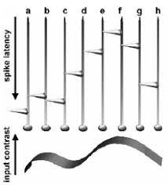
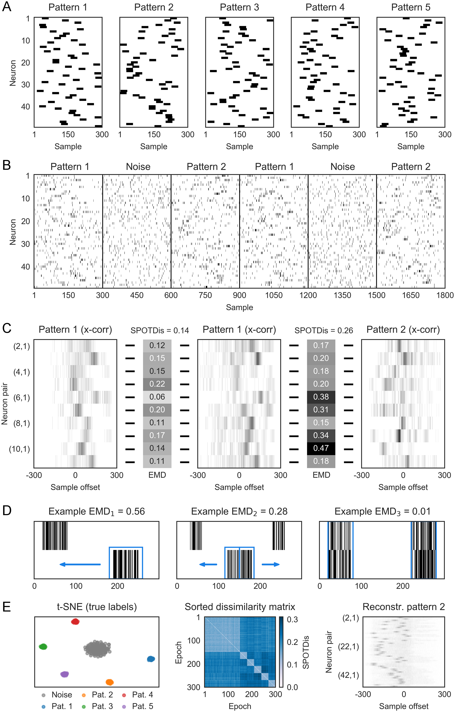

<!DOCTYPE html>
<html xmlns="http://www.w3.org/1999/xhtml" lang="en-US" xml:lang="en-US">
<head>
  <meta charset="utf-8" />
  <meta name="generator" content="pandoc" />
  <meta name="viewport" content="width=device-width, initial-scale=1.0, user-scalable=yes" />
  <meta name="author" content="Camille Besnainou" />
  <meta name="author" content="Antoine Grimaldi" />
  <meta name="author" content="Laurent U Perrinet" />
  <meta name="dcterms.date" content="2022-03-02" />
  <meta name="keywords" content="neurons, code, time" />
  <title>Review on temporal spiking motifs in neurobiological and neuromorphic data</title>
  <style>
    code{white-space: pre-wrap;}
    span.smallcaps{font-variant: small-caps;}
    span.underline{text-decoration: underline;}
    div.column{display: inline-block; vertical-align: top; width: 50%;}
    div.hanging-indent{margin-left: 1.5em; text-indent: -1.5em;}
    ul.task-list{list-style: none;}
    div.csl-bib-body { }
    div.csl-entry {
      clear: both;
    }
    .hanging div.csl-entry {
      margin-left:2em;
      text-indent:-2em;
    }
    div.csl-left-margin {
      min-width:2em;
      float:left;
    }
    div.csl-right-inline {
      margin-left:2em;
      padding-left:1em;
    }
    div.csl-indent {
      margin-left: 2em;
    }
  </style>
  <!--
  Manubot generated metadata rendered from header-includes-template.html.
  Suggest improvements at https://github.com/manubot/manubot/blob/main/manubot/process/header-includes-template.html
  -->
  <meta name="dc.format" content="text/html" />
  <meta name="dc.title" content="Review on temporal spiking motifs in neurobiological and neuromorphic data" />
  <meta name="citation_title" content="Review on temporal spiking motifs in neurobiological and neuromorphic data" />
  <meta property="og:title" content="Review on temporal spiking motifs in neurobiological and neuromorphic data" />
  <meta property="twitter:title" content="Review on temporal spiking motifs in neurobiological and neuromorphic data" />
  <meta name="dc.date" content="2022-03-02" />
  <meta name="citation_publication_date" content="2022-03-02" />
  <meta name="dc.language" content="en-US" />
  <meta name="citation_language" content="en-US" />
  <meta name="dc.relation.ispartof" content="Manubot" />
  <meta name="dc.publisher" content="Manubot" />
  <meta name="citation_journal_title" content="Manubot" />
  <meta name="citation_technical_report_institution" content="Manubot" />
  <meta name="citation_author" content="Camille Besnainou" />
  <meta name="citation_author_institution" content="Institut de Neurosciences de la Timone, CNRS / Aix-Marseille Université" />
  <meta name="citation_author" content="Antoine Grimaldi" />
  <meta name="citation_author_institution" content="Institut de Neurosciences de la Timone, CNRS / Aix-Marseille Université" />
  <meta name="citation_author_orcid" content="XXXX-XXXX-XXXX-XXXX" />
  <meta name="twitter:creator" content="@WWWWWWWWWWWWW" />
  <meta name="citation_author" content="Laurent U Perrinet" />
  <meta name="citation_author_institution" content="Institut de Neurosciences de la Timone, CNRS / Aix-Marseille Université" />
  <meta name="citation_author_orcid" content="0000-0002-9536-010X" />
  <meta name="twitter:creator" content="@laurentperrinet" />
  <link rel="canonical" href="https://SpikeAI.github.io/polychronies/" />
  <meta property="og:url" content="https://SpikeAI.github.io/polychronies/" />
  <meta property="twitter:url" content="https://SpikeAI.github.io/polychronies/" />
  <meta name="citation_fulltext_html_url" content="https://SpikeAI.github.io/polychronies/" />
  <meta name="citation_pdf_url" content="https://SpikeAI.github.io/polychronies/manuscript.pdf" />
  <link rel="alternate" type="application/pdf" href="https://SpikeAI.github.io/polychronies/manuscript.pdf" />
  <link rel="alternate" type="text/html" href="https://SpikeAI.github.io/polychronies/v/b219fe8e59ac301d79c52db5de587d2153e62a78/" />
  <meta name="manubot_html_url_versioned" content="https://SpikeAI.github.io/polychronies/v/b219fe8e59ac301d79c52db5de587d2153e62a78/" />
  <meta name="manubot_pdf_url_versioned" content="https://SpikeAI.github.io/polychronies/v/b219fe8e59ac301d79c52db5de587d2153e62a78/manuscript.pdf" />
  <meta property="og:type" content="article" />
  <meta property="twitter:card" content="summary_large_image" />
  <link rel="icon" type="image/png" sizes="192x192" href="https://manubot.org/favicon-192x192.png" />
  <link rel="mask-icon" href="https://manubot.org/safari-pinned-tab.svg" color="#ad1457" />
  <meta name="theme-color" content="#ad1457" />
  <!-- end Manubot generated metadata -->
  <!--[if lt IE 9]>
    <script src="//cdnjs.cloudflare.com/ajax/libs/html5shiv/3.7.3/html5shiv-printshiv.min.js"></script>
  <![endif]-->
</head>
<body>
<header id="title-block-header">
<h1 class="title">Review on temporal spiking motifs in neurobiological and neuromorphic data</h1>
</header>
<p><small><em>
This manuscript
(<a href="https://SpikeAI.github.io/polychronies/v/b219fe8e59ac301d79c52db5de587d2153e62a78/">permalink</a>)
was automatically generated
from <a href="https://github.com/SpikeAI/polychronies/tree/b219fe8e59ac301d79c52db5de587d2153e62a78">SpikeAI/polychronies@b219fe8</a>
on March 2, 2022.
</em></small></p>
<h2 id="authors">Authors</h2>
<ul>
<li><p><strong>Camille Besnainou</strong><br>
· 
<a href="https://github.com/camillebesnainou">camillebesnainou</a><br>
<small>
Institut de Neurosciences de la Timone, CNRS / Aix-Marseille Université
· Funded by Grant AgileNeuroBot
</small></p></li>
<li><p><strong>Antoine Grimaldi</strong><br>

<a href="https://orcid.org/XXXX-XXXX-XXXX-XXXX">XXXX-XXXX-XXXX-XXXX</a>
· 
<a href="https://github.com/XXXXXXXX">XXXXXXXX</a>
· 
<a href="https://twitter.com/WWWWWWWWWWWWW">WWWWWWWWWWWWW</a><br>
<small>
Institut de Neurosciences de la Timone, CNRS / Aix-Marseille Université
· Funded by Grant XXXXXXXX
</small></p></li>
<li><p><strong>Laurent U Perrinet</strong>
· <a href="https://laurentperrinet.github.io/">https://laurentperrinet.github.io/</a><br>

<a href="https://orcid.org/0000-0002-9536-010X">0000-0002-9536-010X</a>
· 
<a href="https://github.com/laurentperrinet">laurentperrinet</a>
· 
<a href="https://twitter.com/laurentperrinet">laurentperrinet</a><br>
<small>
Institut de Neurosciences de la Timone, CNRS / Aix-Marseille Université
· Funded by Grant APROVIS3D; Grant AgileNeuroBot
</small></p></li>
</ul>
<h2 class="page_break_before" id="abstract">Abstract</h2>
<p>Why do neurons communicate through spikes? An action potential is a binary event —it can occur or not, without further details— and asynchronous, i.e. it can occur at any time. In the living world, neurons almost systematically use this so-called event-based representation, though we do not yet have a clear idea why. A better understanding of this phenomenon remains a fundamental challenge in neurobiology in order to better interpret the masses of recorded data. It is also an emerging challenge in computer science to allow the efficient exploitation of a new class of sensors and event-based computers, called neuromorphic, which could allow significant gains in computing time and energy consumption —a major societal challenge in the age of the digital economy and of global warming.</p>
<p>The response of a biological neuron depends largely on the precise timing of the sequence of presynaptic spikes as they reach the basal dendritic tree. This <em>event-based representation</em> present in the neuronal code is essential in understanding information processing and yet, most neuronal models do not take advantage of this minute temporal dimension. Our goal here is to bring an interdisciplinary perspective on the computational advantage of time series representations for the brain and for information processing machines. In particular, we will focus on the hypothesis that there exists in an assembly of neurons a representation based on a set of motifs of different relative spike times. Here, we will review current litterature on the detection of such motifs in generic raster plots. It is work in progress, where anybody interested can <em>openly</em> join.</p>
<p>This hypothesis is directly inspired by neurobiological observations in the hippocampus, and it expands the capabilities of analog representations based on the firing rate by considering a representation based on repetitions of these motifs at precise times of occurrence. A mathematical formalization would be particularly well suited to neuromorphic computing, and would allow for the supervised or self-supervised learning of such motifs in any event-driven data. We will first review some biological and theoretical evidence in neural information processing. We will then present some models for the detection of such motifs in arbitrary raster plots, synthetic, biological or artificial (notably from event-based cameras). In particular, we will discuss models which exploit the variety of synaptic delays on the dendritic tree. Then, we will try to outline some possible strategies for learning these patterns and finally discuss possible perspectives.</p>
<h2 id="introduction-precise-temporal-patterns-in-the-brain">Introduction: precise temporal patterns in the brain</h2>
<h3 id="ultra-fast-neural-codes-for-ultra-fast-vision">Ultra fast neural codes for ultra fast vision</h3>
<p>Let us start our review of the state of the art on the role of dynamics in vision by presenting some surprising results that have been obtained in neuroscience. Indeed, Simon Thorpe’s group has shown during the last decades numerous examples demonstrating that humans can categorize briefly presented images in a fraction of a second. Its first experiment consisted in asking subjects to categorize images that do or do not contain animals <span class="citation" data-cites="G3GlupPg">[<a href="#ref-G3GlupPg" role="doc-biblioref">1</a>]</span>. The results showed that humans were able to perform this task very well (with a success rate of more than 95%) but above all that a differential activity for the two categories of images could be observed by electroencephalography, showing that this differentiation emerges at a very early latency in neuronal activity. These results have been extended to several species including primates but also extended to different experimental protocols and have shown for example that the response could be extremely fast of the order of 120 ms when the task was to perform a saccade <span class="citation" data-cites="QstYfgqz">[<a href="#ref-QstYfgqz" role="doc-biblioref">2</a>]</span>.</p>
<p>This fast processing also explains the surprising experiments of fast serial detection which consists in presenting a fast succession of different images and to decode via the EEG if the observer can detect for example the presence of an animal. The performances decrease progressively as the frequency of presentation of the images increases. However, it has been shown in the macaque that a significant performance could be maintained with an image presentation time of only 14 ms per image <span class="citation" data-cites="EqCCVwl2">[<a href="#ref-EqCCVwl2" role="doc-biblioref">3</a>]</span>.</p>
<p>This speed of the visual cortex, although surprising, is quite compatible with the latencies that are recorded at the neuro-physiological level. Indeed, when an image is presented on the retina, the visual information is rapidly propagated to the thalamus and then to the primary visual cortex takes about 55 ms in the macaque <span class="citation" data-cites="Vu87UU6A">[<a href="#ref-Vu87UU6A" role="doc-biblioref">4</a>]</span>, see Figure [<a href="#fig:thorpe">1</a>]. This functioning of visual processing as a forward pass is most prominent in fast processing but can be complemented with feedback loops from the higher areas to the sensory areas <span class="citation" data-cites="15aMjRHVK">[<a href="#ref-15aMjRHVK" role="doc-biblioref">5</a>]</span>.</p>
<div id="fig:thorpe" class="fignos">
<figure>

<figcaption aria-hidden="true"><span>Figure 1:</span> From <span class="citation" data-cites="12dWDpY61">[<a href="#ref-12dWDpY61" role="doc-biblioref">6</a>]</span></figcaption>
</figure>
</div>
<h3 id="how-timing-encodes-analogous-profile">How timing encodes analogous profile</h3>
<p>An important characteristic of neuronal information is that it consists mainly in the transfer of action potentials, or spikes, which consist of brief impulses that propagate along the axons of neurons. These have the particularity of being essentially binary in their amplitude (that is to say, they are prototypical, all or nothing). An important consequence of the speed of processing is that it implies that it is carried out using only very few spikes. Indeed, if we consider that a behavioral response in only 120 ms consists of about ten processing stages following the “forward” pathways of the visual system, then this imposes that the processing in a single area is performed with a reduced number of spikes.</p>
<p>Note also that depending on how an in vitro cell is driven, this may influence the reliability of spike timing in neocortical neurons <span class="citation" data-cites="XsHCA4IZ">[<a href="#ref-XsHCA4IZ" role="doc-biblioref">7</a>]</span>.</p>
<div id="fig:roc" class="fignos">
<figure>

<figcaption aria-hidden="true"><span>Figure 2:</span> Latency coding. An input analog profile is encoded in latencies: the higher the contrast, the shorter the latency. In this example, one generates at most one spike per neuron. From <span class="citation" data-cites="YX5wqWH4">[<a href="#ref-YX5wqWH4" role="doc-biblioref">8</a>]</span></figcaption>
</figure>
</div>
<p>At the level of dynamic processing of visual information, it has been shown that an encoding of the values of luminance imminence in the image instead of the retina <span class="citation" data-cites="IjepoonT">[<a href="#ref-IjepoonT" role="doc-biblioref">9</a>]</span>. Notably one can appreciate in figure 1 that the response of ganglion cells to visual gratings that are flashed onto the retina. The authors showed that the neuronal response could be encoded in the latency of the response and not only in the frequency of discharge as is often assumed. In figure 4 of the same article, these results are extended to natural images and show a qualitatively similar behavior. The conclusion of the authors is that the discharge latency of the neurons allows to encode spatial characteristics of the image. First-spike latency codes are a feasible mechanism for information transfer even when biologically plausible estimates of stimulus onset are taken into account <span class="citation" data-cites="1H1Omh73g">[<a href="#ref-1H1Omh73g" role="doc-biblioref">10</a>]</span>.</p>
<p>Similar results have been demonstrated through neurophysiological recordings in the primary visual cortex and show that different levels of visual activity will induce different levels of neuronal discharge latency in the primary visual area <span class="citation" data-cites="513xqzmL">[<a href="#ref-513xqzmL" role="doc-biblioref">11</a>]</span>. Many models have used these properties in temporal coding to build fast image categorization networks. These models take the form of artificial spiking neural networks (SNNs) and have been able to demonstrate their practical applications for image categorization <span class="citation" data-cites="1DpSM1kpQ">[<a href="#ref-1DpSM1kpQ" role="doc-biblioref">12</a>]</span>. This work has been extended to include unsupervised learning capabilities and we have recently developed a SNN architecture that allows to categorize images of different classes in only a few spikes <span class="citation" data-cites="7K80jcx9">[<a href="#ref-fRudGmR1" role="doc-biblioref">14</a>]</span>. This type of modeling is extremely important with respect to the development of a new generation of cameras called Silicon Cameras which, instead of using a basic frame-based representation, uses a representation similar to the one we have just described and which consists in representing the image by events <span class="citation" data-cites="Oet1bgdb">[<a href="#ref-Oet1bgdb" role="doc-biblioref">15</a>]</span>. This type of modeling often uses the classical architecture of image categorization developed in deep learning while adapting it to the specificity of the event-based representation <span class="citation" data-cites="15cR83gqd">[<a href="#ref-15cR83gqd" role="doc-biblioref">16</a>]</span>. Note also that timing is not entirely sensorial or internal but in <span class="citation" data-cites="1E8gkynCm">[<a href="#ref-1E8gkynCm" role="doc-biblioref">17</a>]</span>, they found that “timing accuracy was improved when the environment afforded cues that rats can incorporate into motor routines. Timing, at least in animals, may thus be fundamentally embodied and situated.”</p>
<h3 id="from-synfire-chains">From synfire chains…</h3>
<p>In his book “Corticonics” <span class="citation" data-cites="19MS6Bbwp">[<a href="#ref-19MS6Bbwp" role="doc-biblioref">18</a>]</span>, Moshe Abeles asked if the role of cortical neurons is whether to integrate synaptic inputs or rather to detect coincidences in temporal spiking patterns. The book gradually leads the reader from the macroscopic cortical anatomy and standard electrophysiological properties of single neurons to neural network models. While the first hypothesis favors the rate coding theory, the second possibility highlights the need for temporal precision in the neural code. The book then demonstrates that this could take the form of “synfire chains”, that is synchronous activity on subsets of neurons which could be propagated in a stable fashion. Since, numerous studies demonstrated the emergence of synchronicity in neuron population activity <span class="citation" data-cites="BNK6T5Uk">[<a href="#ref-BNK6T5Uk" role="doc-biblioref">19</a>]</span>, efficient encoding thanks to the use of spike latencies <span class="citation" data-cites="1DpSM1kpQ">[<a href="#ref-IjepoonT" role="doc-biblioref">9</a>]</span> or precise timing in the auditory system <span class="citation" data-cites="mxPMgOmW">[<a href="#ref-1ECJhg2GM" role="doc-biblioref">21</a>]</span>. All these findings, and more <span class="citation" data-cites="WZsEyOlK">[<a href="#ref-WZsEyOlK" role="doc-biblioref">22</a>]</span>, highlight the importance of the temporal aspect of the neural code and suggest the existence of repeated spatio-temporal patterns in the spike train.</p>
<p>It was shown that a simple model may allow the propagation of such synfire chains <span class="citation" data-cites="xbqYi2PD">[<a href="#ref-xbqYi2PD" role="doc-biblioref">23</a>]</span>. This model considers the dynamics of leaky integrate-of-fire neurons in different groups of similar size. Each neuron of one group is connected by an excitatory synapse to the next. When a pulse is elicited in the first group, this may generate a spike in the next group. Depending on the weight value, this new activity may get more or less synchronized than the previous pulse (as measured by the standard deviation of spike times in the pulse). Recursively applying this to a sequence of groups generates either a synfire propagation or not. A simple simulation is shown in Figure [<a href="#fig:diesman">3</a>].</p>
<div id="fig:diesman" class="fignos">
<figure>

<figcaption aria-hidden="true"><span>Figure 3:</span> Simulation of a synfire propagation <a href="https://brian2.readthedocs.io/en/stable/examples/frompapers.Diesmann_et_al_1999.html">using Brian</a>. The model consists of 10 groups of 100 neurons each. A pulse with a given jitter is generated in the first group which here generates a pulse after a certain processing delay in the second group with a lower jitter. This allows the propagation of the synchronous activity along the chain of the neural groups.</figcaption>
</figure>
</div>
<p>Attempts have been made to detect such synfire chains in neurobiological data <span class="citation" data-cites="qVu1OkoS">[<a href="#ref-qVu1OkoS" role="doc-biblioref">24</a>]</span>: “The sensitivity is high enough to detect synfire chain activity in simultaneous single-unit recordings of 100 to 200 neurons from such data, enabling application to experimental data in the near future.” Further models have shown that such synfire chains could be embedded in topographies <span class="citation" data-cites="xBZqHOuN">[<a href="#ref-xBZqHOuN" role="doc-biblioref">25</a>]</span> or using conductance-based neurons with feed-forward inhibition to improve the robustness of the propagation <span class="citation" data-cites="p7xk5w4f">[<a href="#ref-p7xk5w4f" role="doc-biblioref">26</a>]</span>. In particular, this was implemented using the pyNN language <span class="citation" data-cites="33SRV9MB">[<a href="#ref-33SRV9MB" role="doc-biblioref">27</a>]</span> both in CPU-based and neuromorphic hardware <span class="citation" data-cites="DiIieN8s">[<a href="#ref-DiIieN8s" role="doc-biblioref">28</a>]</span> (see Figure [<a href="#fig:pynn">4</a>]).</p>
<div id="fig:pynn" class="fignos">
<figure>

<figcaption aria-hidden="true"><span>Figure 4:</span> A pyNN implementation of a Synfire chain with feedforward inhibition. The background is only utilized in the original model, where it is implemented as random Gaussian current. For the presented hardware implementation it has been omitted due to network size constraints. As compensation for missing background stimuli, the resting potential was increased to ensure a comparable excitability of the neurons. The state space gives the duration of synfire chains as a function of the protocol’s parameters and compares (C) CPU to (D) neuromorphic implementations.</figcaption>
</figure>
</div>
<p>Note also that synchronicity may explain some unintuitive results. Indeed it has been shown that thalamocortical synapses are relatively weak compared to the amount of intra-cortical activity. However, this pathway is sufficient to drive the cortex as this input is more often synchronously active <span class="citation" data-cites="18ZU9zP9l">[<a href="#ref-18ZU9zP9l" role="doc-biblioref">29</a>]</span>.</p>
<h4 id="todo-to-synfire-braids">TODO : … to synfire braids</h4>
<ul>
<li><span class="citation" data-cites="HjDb1gnq">[<a href="#ref-HjDb1gnq" role="doc-biblioref">30</a>]</span> : from synfire chains to Synfire braids</li>
</ul>
<p>In neuronal models, an efficient use or detection of these spatio-temporal patterns embedded in the spike train comes with the integration of heterogeneous delays <span class="citation" data-cites="1GazUBEdT">[<a href="#ref-ga3ZTFC7" role="doc-biblioref">33</a>]</span>. Notably, Izhikevich <span class="citation" data-cites="SM9G0xBK">[<a href="#ref-SM9G0xBK" role="doc-biblioref">34</a>]</span> introduced the notion of polychronous groups (PGs) as a repetitive motif of spikes defined by a subset of neurons with different, yet precise, spiking delays. This representation has a much greater information capacity in comparison to other neural coding approaches through their connectivity and the possible coexistence of numerous superposed PGs.</p>
<p>sparse in time and space [2] AL Barth and JF Poulet Trends in Neurosciences 35.6 (2012), pp. 345-355. [3] CC Petersen and S Crochet, Neuron 78.1 (2013), pp. 28-48.</p>
<ul>
<li><p>recent theories of binding by synchrony : Fries 2005 trends cog neuro with spikes arriving at peak susceptibility (top of a cycle) or down, van Rullen, Laura Dugué</p></li>
<li><p>A notable exception is the polychronization model of Izhikevich <span class="citation" data-cites="SM9G0xBK">[<a href="#ref-SM9G0xBK" role="doc-biblioref">34</a>]</span>, which combined the construction of a random recurrent model of spiking neurons including such delays and whose weights evolved with a Spike-Time Dependent Plasticity (STDP) learning rule. In this model, raster plot analysis showed repeated activation of Polychronous Groups (PGs), i.e., specific spike patterns with a specific sequence of activations.</p></li>
</ul>
<h4 id="traveling-waves-a-more-generic-view">Traveling waves: A more generic view</h4>
<p><span class="citation" data-cites="BNK6T5Uk">[<a href="#ref-BNK6T5Uk" role="doc-biblioref">19</a>]</span></p>
<p><span class="citation" data-cites="hGYLURVS">[<a href="#ref-hGYLURVS" role="doc-biblioref">35</a>]</span></p>
<p>Spontaneous traveling waves naturally emerge from horizontal fiber time delays and travel through locally asynchronous-irregular states <span class="citation" data-cites="wVZpQvSk">[<a href="#ref-wVZpQvSk" role="doc-biblioref">36</a>]</span></p>
<p>Our approach would be distinct than these approaches from us and colleagues as we will directly deal with delays in the system at the presynaptic level.</p>
<p>there are temporal delays in the nervous system, both at the neural <span class="citation" data-cites="f7gkBktf">[<a href="#ref-f7gkBktf" role="doc-biblioref">37</a>]</span> and behavioral <span class="citation" data-cites="1BSbXPPDF">[<a href="#ref-1BSbXPPDF" role="doc-biblioref">38</a>]</span> levels. Extending this knowledge to the optimization of delays in a SNN will provide a breakthrough in the efficiency of these networks.</p>
<p>Our expertise in reproducing the HOTS network <span class="citation" data-cites="7K80jcx9">[<a href="#ref-fRudGmR1" role="doc-biblioref">14</a>]</span></p>
<h3 id="precise-temporal-patterns">precise temporal patterns</h3>
<p>Currently, few interdisciplinary research projects take full advantage of event-based representations in computational and biological neuroscience. Nevertheless, there is a substantial literature in neurobiology indicating that brain dynamics often organize into stereotyped sequences (like synfire chains (Ikegaya et al., 2004), packets (Luczak et al., 2007) or hippocampal sequences <span class="citation" data-cites="SVfasyCp">[<a href="#ref-PUNGVou" role="doc-biblioref">40</a>]</span> and on the role of such precise spike timing in downstream information transfer and coding <span class="citation" data-cites="19fAM6hcv">[<a href="#ref-MfmcMsqA" role="doc-biblioref">43</a>]</span>. In particular, one theoretical viewpoint considers synfire braids (Bienenstock, 1995), where a precise sequential motif of spikes will synchronize as it reaches the soma of a neuron for which synaptic delays are adequately tuned. In particular, computational modeling shows that at the scale of neurons, an efficient neural code can emerge where spike times are organized in prototypical, precise temporal motifs (Izhikevich, 2006) which he defined as polychronous groups.</p>
<p>Stereotyped sequences of neuronal activation have been particularly well described in the adult hippocampus and related to its function in mental travel in time and space <span class="citation" data-cites="13dQ0R4UM">[<a href="#ref-13dQ0R4UM" role="doc-biblioref">42</a>]</span>. These sequences can be internally generated <span class="citation" data-cites="SVfasyCp">[<a href="#ref-PUNGVou" role="doc-biblioref">40</a>]</span> and are formed by the chained activation of orthogonal assemblies, themselves organized as sequence packets (Malvache et al., 2016). Thus, hippocampal sequences are formed by the ordered activation of smaller sequence motifs. They are stereotyped and robust, since neurons can be activated in the same order across days (see Figure [<a href="#fig:haimerl">5</a>] from <span class="citation" data-cites="qI2HUEyy">[<a href="#ref-qI2HUEyy" role="doc-biblioref">44</a>]</span> below). As a consequence, hippocampal sequences may rely on an internally hardwired structure and form the functional building blocks for encoding, storing and retrieving experience.</p>
<div id="fig:haimerl" class="fignos">
<figure>

<figcaption aria-hidden="true"><span>Figure 5:</span> Mixed distance and duration representation in CA1. (A) Calcium fluorescence (heatmap) of CA1 neurons participating to run sequences in consecutive imaging sessions. Cells have been selected and ordered with respect to their activity in the first imaging session (Top). The black line represents speed of the mouse.</figcaption>
</figure>
</div>
<p>TODO: read <span class="citation" data-cites="MfmcMsqA">[<a href="#ref-MfmcMsqA" role="doc-biblioref">43</a>]</span> Luczak A, McNaughton BL, Harris KD. Packet-based communication in the cortex. Nat Rev Neurosci. 2015;16(12):745–55.</p>
<p>In <span class="citation" data-cites="4D8Jnhkz">[<a href="#ref-4D8Jnhkz" role="doc-biblioref">45</a>]</span>, it was shown that attentional information from V4 or arousal can change the timings of groups of events in V1. They develop a HMM model for quantifying the transitions. “In this study, van Kempen et al. show that fluctuations in neural excitability are coordinated between visual areas with retinotopic precision. Top-down attention drives interareal coordination along the reverse cortical hierarchy, predicting better behavioral performance with increased coordination.”</p>
<h3 id="cortical-songs-ikegaya2004">cortical songs <span class="citation" data-cites="Mf6h1KNY">[<a href="#ref-Mf6h1KNY" role="doc-biblioref">46</a>]</span></h3>
<ul>
<li><p>Ikegaya and colleagues worked on spontaneous activity in vitro and in vivo. They demonstrated that in cortical activity, we can find a repetition of several motifs. In PSCs, but also in spike activity. These sequences repeat after minutes and have a precise spatio temporal structure with a ms precision. They can be specific of a particular layer or colomn, are synchronized with network activity oscillation and can involve several cells. They also demonstated that these sequences can form supersequences : the cortical songs. It consist of the assembly of several sequences which repeat in a specific order with a compressed timing.</p></li>
<li><p>“We find precise repetitions of spontaneous patterns of synaptic inputs in neocortical neurons in vivo and in vitro. These patterns repeat after minutes, maintaining millisecond accuracy.”</p></li>
<li><p>Precisely repeating motifs of spontaneous synaptic activity in slices: duration around 1s +/- .5 s. Some events in motifs are of similar size but sometimes absent - better described by Bernouilli than SE (and covariance)</p></li>
<li><p><em>in vivo</em> spontaneous activity also reveals repeating sequences. About 3000 sequences, each involving 3-10 cells out of about 900, and last up to 3 seconds</p></li>
<li><p>topography: “Sequences had specific topographic structures, in some cases involving only a particular layer or a vertical column of cells or cells located in a cluster (Fig. 4, A and B, and fig. S3B). (…) Therefore, repeating temporal patterns of activation (…) were associated with a structured spatial organization of the neurons that formed them.”</p></li>
<li><p>“Cortical songs: modular assemblies of repeated sequences”: hierarchical detection.</p></li>
<li><p>in cotical songs, there is a “compressing timing” which may be taken into account by a similar mechanism as maxpooling in CNNs for space, but in time. Or there may be a mechanism for controlling the replay speed (pulvinar, … , ?)</p></li>
</ul>
<div id="fig:Ikegaya2004" class="fignos">
<figure>

<figcaption aria-hidden="true"><span>Figure 6:</span> Fig. 1. from <span class="citation" data-cites="Mf6h1KNY">[<a href="#ref-Mf6h1KNY" role="doc-biblioref">46</a>]</span> Repeated motifs of spontaneous synaptic activity in vitro and in vivo. (A) Repeated motifs of intracellular activity from layer 5 pyramidal neurons in slices. Panels show segments (red) of the same voltage-clamp recording from the same cell repeating seconds or minutes after the initial occurrence (blue). Arrows indicate timings of repeated PSCs. (i) Upper trace: low–temporal resolution display of spontaneous activity of a neuron. Lower traces: higher resolution display of the repeated motif at indicated regions of the trace (a to c). (ii) Example of a longer motif. (B) Three repetitions of a motif. The top traces show the motifs superimposed on each other (blue, green, and red), the middle traces show these same traces individually, and the bottom traces show temporally magnified regions of the motifs (a to c). (C) Repeated sequences of intracellular current-clamp recordings in vivo. Two (i) and three (ii) repetitions of motifs are shown. Shuffle tests were performed on traces (i), a to c, yielding significantly fewer repeats (fig. S2, P &lt; 0.02). In (i), the blue trace is shifted –2.75 mV; in (ii), the blue trace is shifted –1.58 mV, and the green +0.79 mV.</figcaption>
</figure>
</div>
<p>It is interesting to make a parallel with the “Rapid Formation of Robust Auditory Memories” reported in <span class="citation" data-cites="Jzr1gwsr">[<a href="#ref-Jzr1gwsr" role="doc-biblioref">47</a>]</span> which uses noise patterns. They ” used random waveforms to probe the formation of new memories for arbitrary complex sounds. A behavioral measure was designed, based on the detection of repetitions embedded in noises up to 4 s long.” The task is to detect the repetition of the same (frozen) noise within a trial. ” Unbeknownst to listeners, some noise samples reoccurred randomly throughout an experimental block.” they showed that the “repeated exposure induced learning for otherwise totally unpredictable and meaningless sounds” by showing that the sensitivity increases in that case. Note that “acoustical analyses failed to reveal any obvious differences between good and bad noises” and that “Time reversal had no significant effect on the RefRN advantage” (quite surprising). The Learning is unsupervised (statistical, automatic), fast-acting (phase transition, “insight”), and long-lasting (memorization).</p>
<h3 id="polychronization">polychronization</h3>
<h3 id="outline">outline</h3>
<p>The approach which is currently most prominent in the Spiking Neural Networks community is to use existing algorithms from machine learning and to adapt them to the specificity of spiking architectures. One such example is to adapt the successes of deep learning algorithms and to transfer the back-propagation algorithm to SNNs, for instance with a surrogate gradient. This approach is quite successful, and SNNs approach in some case the performance of Deep Learning algorithms, for instance on the N-MNIST dataset for categorizing digits in a stream of events. However, most biological neural systems use spikes and are obviously more efficient than current state-of-the-art vision systems, both in terms of efficiency (accuracy), in speed (latency), and energy consumption. There is therefore an immense gap in the way we understand biology to translate it to the efficiency of SNNs. Our approach will be to focus on the temporal representation of information directly. In particular, our objective is to fully exploit the capacity of spiking neurons to detect synchronous patterns.</p>
<p>Remarkably, novel neuromorphic chips use a representation similar to that of real neurons <span class="citation" data-cites="Oet1bgdb">[<a href="#ref-Oet1bgdb" role="doc-biblioref">15</a>]</span>. For example, event-based cameras provide a stream of binary asynchronous events signaling detectable changes in luminance, and information is represented by these spike-based temporal motifs, hence their name “silicon retinas” (see Figure <a href="#fig:silicon_retina">7</a>). For such devices, it is crucial to better understand the potential of using such event-based representations in order to devise novel algorithms.</p>
<div id="fig:silicon_retina" class="fignos">
<figure>

<figcaption aria-hidden="true"><span>Figure 7:</span> A miniature, event-based ATIS sensor. Contrary to a classical frame-based camera for which a full dense image representation is given at discrete, regularly spaced timings, the event-based camera provides with events at the micro-second resolution. These are sparse as they represent luminance increments or decrements (ON and OFF events, respectively).</figcaption>
</figure>
</div>
<p>This section has provided evidence that polychronous groups are an important apsect of information representation in biology with important application in data analysis and neuromorphic engineering. The rest of this review paper is organized as follows.</p>
<p>First, we will review models for the detection of polychronous groups:</p>
<ul>
<li><p>A crucial advantage of Spiking Neural Networks (SNNs) architectures lies in its processing of temporal information. Yet, most SNNs encode the temporal signal as an analog signal and try to “cross-compile” classical Neural Network to a spiking architecture. To go beyond the state-of-the-art, we will review here on one core computation of a spiking neuron, that is, is its ability to switch from the classical integrator mode (summing analog currents on its synapses) to a synchrony detector where it emits a spike whenever presynaptic spiking inputs are synchronized. To overcome the diversity of input presynaptic patterns, we will explore different existing architectures to learn to detect stable “polychronous“ events, that is, volleys of spikes which are stable up to certain synaptic delays. These models will be compared in light of neuroscientific and computational perspectives. We review theoretical and computational foundations of PG detection in models.</p></li>
<li><p>Application to Image processing using sparse spiking representations: Using the core computational unit defined, extension of the computation to a topographic representation similar to that observed in the primary visual cortex of mammals. design of micro-circuits with specific lateral interactions will allow us to design efficient micro-circuits for the sparse representation of images.</p></li>
</ul>
<p>Finally we will discuss future avenues for effective PG detection and learning in event streams.</p>
<h2 id="models-of-polychronization-detection-in-models">Models of polychronization detection in models</h2>
<h3 id="izhikevitch">Izhikevitch</h3>
<ul>
<li><p>Reproducing Polychronization: A Guide to Maximizing the Reproducibility of Spiking Network Models <a href="https://www.frontiersin.org/articles/10.3389/fninf.2018.00046/full" class="uri">https://www.frontiersin.org/articles/10.3389/fninf.2018.00046/full</a></p>
<ul>
<li>comes with python code</li>
</ul></li>
<li><p>blog post by Paxon Frady <a href="https://epaxon.blogspot.com/2012/07/izhikevich-2006-polychronization.html" class="uri">https://epaxon.blogspot.com/2012/07/izhikevich-2006-polychronization.html</a></p></li>
<li><p>dynamic networks &amp; learning delays:</p>
<ul>
<li>Huning H., Glunder H., and Palm G. (1998) Synaptic delay learning in pulse-coupled neurons. Neural Computation, 10:555–565. <a href="https://www.deepdyve.com/lp/mit-press/synaptic-delay-learning-in-pulse-coupled-neurons-DGMiNHxp0A" class="uri">https://www.deepdyve.com/lp/mit-press/synaptic-delay-learning-in-pulse-coupled-neurons-DGMiNHxp0A</a></li>
<li><a href="https://www.researchgate.net/publication/37921636_Dynamics_of_Self-Organized_Delay_Adaptation">Eurich C., Pawelzik K., Ernst U., Cowan J., and Milton J. (1999) Dynamics of self-organazed delay adaptation. Phys. Rev. Lett., 82:1594–1597.</a></li>
<li>The recent “multi-neuronal spike sequence detector” (MNSD) architecture integrates the weight- and delay-adjustment methods by combining heterosynaptic plasticity with the neurocomputational feature spike latency : <a href="https://pubmed.ncbi.nlm.nih.gov/33679293/" class="uri">https://pubmed.ncbi.nlm.nih.gov/33679293/</a></li>
<li>an extensive (graph-centric) review on <a href="https://arxiv.org/abs/2109.07618">Synchronization in time-varying networks</a></li>
</ul></li>
<li><p>related</p></li>
</ul>
<h3 id="spike-distances">spike distances</h3>
<p>J. D. Victor and K. P. Purpura, “Nature and precision of temporal coding in visual cortex: a metric-space analysis,” J. Neurophysiol., vol. 76, pp. 1310–1326, Aug. 1996.</p>
<p>M. C. W. van Rossum, “A novel spike distance,” Neural Comput., vol. 13, no. 4, pp. 751–763, 2001. [21] D. Aronov and J. D. Victor, “Non-Euclidean properties of spike train metric spaces,” Physical Rev. E (Statist., Nonlinear, Soft Matter Phys.), vol. 69, no. 6, 2004.</p>
<p>T. Kreuz, J. S. Haas, A. Morelli, H. D. I. Abarbanel, and A. Politi, “Measuring spike train synchrony,” J. Neurosci. Methods, vol. 165, no. 1, pp. 151–161, 2007. [23] H.</p>
<p>Paper by <span class="citation" data-cites="LjkTSK3h">[<a href="#ref-LjkTSK3h" role="doc-biblioref">48</a>]</span> On Stability of Distance Measures for Event Sequences Induced by Level-Crossing Sampling</p>
<p>Weyl’s discrepency measure <span class="citation" data-cites="RYzP72lj">[<a href="#ref-RYzP72lj" role="doc-biblioref">49</a>]</span> which may lead to the definition of a cross-correlation.</p>
<p>Robust computation with rhythmic spike patterns. Proceedings of the National Academy of Sciences of the United States of America 116(36), 18050 - 18059. https://dx.doi.org/10.1073/pnas.1902653116</p>
<p>Memory traces in dynamical systems <span class="citation" data-cites="svppVNWe">[<a href="#ref-svppVNWe" role="doc-biblioref">50</a>]</span> We address these issues by applying Fisher information theory to dynamical systems driven by time-dependent signals corrupted by noise. Memory capacity is constrained by architecture: “This limit can be realized by feedforward structures with divergent fan out that distributes the signal across neurons, thereby avoiding saturation.”</p>
<h2 id="detecting-patterns-in-biological-raster-plots">Detecting patterns in biological raster plots</h2>
<h3 id="decoding-neural-activity">decoding neural activity</h3>
<p>In generic linear non linear lnl models, the output is assumed to be poisson. As such a simple decoding strategy is to asscume it is to b inferned for a given tuning curves (Jayazeri) or simply by a simple regression <span class="citation" data-cites="MgINa6bU">[<a href="#ref-MgINa6bU" role="doc-biblioref">51</a>]</span>. This latter model assumes a Bernoulli model for the generation of spikes such that the decoding amounts to a single-layer logistic regression.</p>
<p>S. Grun, M. Diesmann, and A. Aertsen. Unitary event analysis. In Analysis of parallel spike trains, pages 191–220. Springer, 2010. + coincidence detection</p>
<h3 id="rastermap-decoding-large-scale-data">Rastermap : decoding large-scale data</h3>
<p><a href="https://nbviewer.org/github/MouseLand/rastermap/blob/master/tutorial/tutorial.ipynb">Rastermap</a> re-arranges neurons in the raster plot based on similarity of activity</p>
<ul>
<li>https://www.janelia.org/lab/stringer-lab</li>
<li>described in <span class="citation" data-cites="zc16plUu">[<a href="#ref-zc16plUu" role="doc-biblioref">52</a>]</span></li>
<li><a href="https://github.com/MouseLand/rastermap">rastermap</a></li>
<li>deconvolution strategy</li>
<li>based on a linear model</li>
</ul>
<h4 id="stringer-et-al-2019-nature-stringer2019nature">Stringer et al 2019, Nature <span class="citation" data-cites="brg2FFsb">[<a href="#ref-brg2FFsb" role="doc-biblioref">53</a>]</span></h4>
<ul>
<li>“A neuronal population encodes information most efficiently when its stimulus responses are high-dimensional and uncorrelated, and most robustly when they are lower-dimensional and correlated. Here we analysed the dimensionality of the encoding of natural images by large populations of neurons in the visual cortex of awake mice.”</li>
<li>Data availability: All of the processed deconvolved calcium traces are available on <a href="https://figshare.com/articles/Recordings_of_ten_thousand_neurons_in_visual_cortex_in_response_to_2_800_natural_images/6845348">figshare</a>, together with the image stimuli.</li>
<li>Code availability: The code is available on <a href="https://github.com/MouseLand/stringer-pachitariu-et-al-2018b">GitHub</a>.</li>
</ul>
<h4 id="stringer-et-al-2019-science-stringer2019science">Stringer et al 2019, Science <span class="citation" data-cites="1BPHUQLTf">[<a href="#ref-1BPHUQLTf" role="doc-biblioref">54</a>]</span></h4>
<ul>
<li><p>Stringer et al. analyzed spontaneous neuronal firing, finding that neurons in the primary visual cortex encoded both visual information and motor activity related to facial movements. The variability of neuronal responses to visual stimuli in the primary visual area is mainly related to arousal and reflects the encoding of latent behavioral states.</p></li>
<li><p>see also the work showing that you can encode very precise orientation information by using many neurons: <span class="citation" data-cites="1EMs3GS0B">[<a href="#ref-1EMs3GS0B" role="doc-biblioref">55</a>]</span></p></li>
</ul>
<h3 id="detecting-structured-temporal-patterns">detecting structured temporal patterns</h3>
<h4 id="paper-by-grossberger-2018-grossberger2018">Paper by Grossberger, 2018 <span class="citation" data-cites="9AK1cwY1">[<a href="#ref-9AK1cwY1" role="doc-biblioref">56</a>]</span></h4>
<ul>
<li>Temporally ordered multi-neuron patterns likely encode information in the brain. We introduce an unsupervised method, SPOTDisClust (Spike Pattern Optimal Transport Dissimilarity Clustering), for their detection from high-dimensional neural ensembles. SPOTDisClust measures similarity between two ensemble spike patterns by determining the minimum transport cost of transforming their corresponding normalized cross-correlation matrices into each other (SPOTDis).</li>
<li>Detecting these temporal patterns represents a major methodological challenge.</li>
<li>Many approaches to this problem are supervised, that is, they take patterns occurring concurrently with a known event, such as the delivery of a stimulus for sensory neurons or the traversal of a running track for hippocampal place fields, as a “template” and then search for repetitions of the same template in spiking activity :</li>
<li>Nadasdy Z, Hirase H, Czurko A, Csicsvari J, Buzsaki G. Replay and time compression of recurring spike sequences in the hippocampus. J Neurosci. 1999;19(21):9497–507. pmid:10531452</li>
<li>Lee AK, Wilson MA. A combinatorial method for analyzing sequential firing patterns involving an arbitrary number of neurons based on relative time order. J Neurophysiol. 2004;92(4):2555–73. pmid:15212425</li>
<li>Davidson TJ, Kloosterman F, Wilson MA. Hippocampal replay of extended experience. Neuron. 2009;63(4):497–507. pmid:19709631</li>
<li>only one spike per neuron: fig 1A = “For each pattern and each neuron, a random position was chosen for the activation pulse.”</li>
<li>t-SNE projection with HDBSCAN labels shows that our clustering method can retrieve all patterns from the data.</li>
<li>data available @ https://doi.org/10.1371/journal.pcbi.1006283.s013</li>
</ul>
<div id="fig:G2018-1" class="fignos">
<figure>

<figcaption aria-hidden="true"><span>Figure 8:</span> Fig 1 of <span class="citation" data-cites="9AK1cwY1">[<a href="#ref-9AK1cwY1" role="doc-biblioref">56</a>]</span>: “Simulated example illustrating the steps in SPOTDisClust. A) Structure of five “ground-truth” patterns (…). For each pattern and each neuron, a random position was chosen for the activation pulse. B) Neuronal output is generated according to an inhomogeneous Poisson process, with rates dictated by the patterns in (A).” (© Authors under a <a href="https://journals.plos.org/ploscompbiol/article?id=10.1371/journal.pcbi.1006283">CC licence</a>)</figcaption>
</figure>
</div>
<ul>
<li>“However, SPOTDis has two principal weaknesses that we address here: (1) Its computational complexity, for comparing two time epochs, is O(N2), where N is the number of neurons. This becomes a major problem for computing an MM dissimilarity matrix (for M time epochs) for thousands of neurons. (2) It relies exclusively on pairwise spike-timing relationships (i.e 2nd order correlations), because it does not solve the optimal transport problem for the entire spike pattern, but only for neuron pairs separately. Hence, it may not be sensitive to higher-order correlations in spiking
patterns.
Here, we develop a novel dissimilarity measure for multi-neuron spiking patterns called SpikeShip, which has linear computational complexity of O(N). We achieve this by (1) computing the minimum transport cost of spikes for each spike train separately, and (2) discounting a global translation term in the transport flow across neurons.”
https://doi.org/10.1101/2020.06.03.131573;</li>
</ul>
<h4 id="paper-by-russo-et-al-2017-russo2017">Paper by Russo et al 2017 <span class="citation" data-cites="RrgzWOSk">[<a href="#ref-RrgzWOSk" role="doc-biblioref">57</a>]</span></h4>
<ul>
<li>“Here we present such a unifying methodological and conceptual framework which detects assembly structure at many different time scales, levels of precision, and with arbitrary internal organization.” by <span class="citation" data-cites="RrgzWOSk">[<a href="#ref-RrgzWOSk" role="doc-biblioref">57</a>]</span></li>
<li>sliding window as in <span class="citation" data-cites="1XpTamcl">[<a href="#ref-1XpTamcl" role="doc-biblioref">58</a>]</span> (“Numerous other statistical procedures for detecting assemblies or sequential patterns have been proposed previously”) - extended to multiple lags <span class="citation" data-cites="bc9czTxi">[<a href="#ref-bc9czTxi" role="doc-biblioref">59</a>]</span></li>
<li>based on a “non-stationarity-corrected parametric test statistic for assessing the independence of pairs” and “an agglomerative, heuristic clustering algorithm for fusing significant pairs into higher-order assemblies”</li>
</ul>
<h4 id="neural-variability-and-sampling-based-probabilistic-representations-in-the-visual-cortex-orban2016">Neural Variability and Sampling-Based Probabilistic Representations in the Visual Cortex <span class="citation" data-cites="1300cS9RL">[<a href="#ref-1300cS9RL" role="doc-biblioref">60</a>]</span></h4>
<ul>
<li>Stochastic sampling links perceptual uncertainty to neural response variability</li>
<li>Model accounts for independent changes in strength and variability of responses</li>
<li>Model predicts relationship between noise, signal, and spontaneous correlations</li>
<li>Stimulus statistics dependence of response statistics is explained</li>
</ul>
<h4 id="fpga">FPGA</h4>
<p>Dynamics of Delay-Coupled Excitable Neural Systems.</p>
<pre><code>February 2009International Journal of Bifurcation and Chaos 19(02):745-753

DOI: 10.1142/S0218127409023111</code></pre>
<p>V. Thanasoulis, B. Vogginger, J. Partzsch and C. Mayr, “Delay-Based Neural Computation: Pulse Routing Architecture and Benchmark Application in FPGA,” 2021 28th IEEE International Conference on Electronics, Circuits, and Systems (ICECS), 2021, pp. 1-5, doi: 10.1109/ICECS53924.2021.9665468.</p>
<h2 id="learning-to-detect-polychronous-groups">Learning to detect polychronous groups</h2>
<h3 id="learning-weights-and-delays">Learning weights … and delays</h3>
<p>spike time coding in a neuron: We will describe the Spike-Time Dependent Plasticity (STDP) <span class="citation" data-cites="19NyVq80B">[<a href="#ref-19NyVq80B" role="doc-biblioref">61</a>]</span> rule which implement an unsupervised learning aiming at optimizing the detection of polychronous patterns, that is volleys of spikes which are synchronized, up to some stable pattern of pre-synaptic delays. This STDP rule will be based by the inversion of the generative model for spike formation and will therefore be derived by a Bayesian approach. This will decouple the active synapses (similarly to a logistic regression) from the values of possible synaptic delays.</p>
<p><span class="citation" data-cites="11p3NXmkg">[<a href="#ref-11p3NXmkg" role="doc-biblioref">62</a>]</span> : coherence detection
<span class="citation" data-cites="j5xS3owo">[<a href="#ref-j5xS3owo" role="doc-biblioref">63</a>]</span> : STDP</p>
<p><span class="citation" data-cites="UeTLXQCp">[<a href="#ref-UeTLXQCp" role="doc-biblioref">64</a>]</span></p>
<p>Bio-plausible Unsupervised Delay Learning for Extracting Temporal Features in Spiking Neural Networks
Alireza Nadafian, Mohammad Ganjtabesh</p>
<pre><code>The plasticity of the conduction delay between neurons plays a fundamental role in learning. However, the exact underlying mechanisms in the brain for this modulation is still an open problem. Understanding the precise adjustment of synaptic delays could help us in developing effective brain-inspired computational models in providing aligned insights with the experimental evidence. In this paper, we propose an unsupervised biologically plausible learning rule for adjusting the synaptic delays in spiking neural networks. Then, we provided some mathematical proofs to show that our learning rule gives a neuron the ability to learn repeating spatio-temporal patterns. Furthermore, the experimental results of applying an STDP-based spiking neural network equipped with our proposed delay learning rule on Random Dot Kinematogram indicate the efficacy of the proposed delay learning rule in extracting temporal features.</code></pre>
<h3 id="learning-sequences">Learning sequences</h3>
<p>In <span class="citation" data-cites="WFwUKZb5">[<a href="#ref-WFwUKZb5" role="doc-biblioref">65</a>]</span>, authors present a model to “show a way by which the nervous system maintains precise, stereotyped behavior in the face of environmental and neural changes”. It is shown in bridsong generation that “A precise, temporally sparse sequence from the premotor nucleus HVC is crucial to the performance of song in songbirds” <span class="citation" data-cites="1EhOfHrje">[<a href="#ref-SAIh1pga" role="doc-biblioref">68</a>]</span> and this model shows how one could vary HVC activity using something similar to dropout in ML. Using such controlled variability, “behaviors are made more robust to environmental change by continually seeking subtly new ways of performing the same task”. Not sure however how important it is that the HVC pattern should be sparse (and similar to PGs).</p>
<ul>
<li><p>in <span class="citation" data-cites="Jzr1gwsr">[<a href="#ref-Jzr1gwsr" role="doc-biblioref">47</a>]</span>, there are ‘‘good’’ and ‘‘bad’’ noises show that some patterns are more easy to disentangle - similar to bird songs and ecological niche.</p></li>
<li><p>In Bellec <span class="citation" data-cites="aj6TgorR">[<a href="#ref-aj6TgorR" role="doc-biblioref">69</a>]</span>, authors fit summary statistics of neural data with a differentiable spiking network simulator.</p>
<ul>
<li>the loss function is the cross entropy (following Bernouilli hypothesis with a GLM where each unit is modelled with a SRM neuron <span class="citation" data-cites="14e3BCBii">[<a href="#ref-14e3BCBii" role="doc-biblioref">70</a>]</span> with recurrent dynamics)</li>
<li>sample and measure method to include latent / hidden neurons</li>
<li>comes with code https://github.com/EPFL-LCN/pub-bellec-wang-2021-sample-and-measure</li>
<li>V1-dataset : The dataset we used was collected by Smith and Kohn [49] and is publicly available at:
http://crcns.org/data-sets/vc/pvc-11 - it is in a sense supervised with the input being the movie and the output the spikes recorded.</li>
</ul></li>
</ul>
<h3 id="todo-more-bib-to-read">TODO: more bib to read</h3>
<p>Learning compositional sequences with multiple time scales through a hierarchical network of spiking neurons.
Maes A, Barahona M, Clopath C.PLoS Comput Biol. 2021</p>
<p>Characteristics of sequential activity in networks with temporally asymmetric Hebbian learning.
Gillett M, Pereira U, Brunel N.Proc Natl Acad Sci U S A. 2020</p>
<p>Unsupervised Learning of Persistent and Sequential Activity.
Pereira U, Brunel N.Front Comput Neurosci. 2020</p>
<p>From space to time: Spatial inhomogeneities lead to the emergence of spatiotemporal sequences in spiking neuronal networks.
Spreizer S, Aertsen A, Kumar A.PLoS Comput Biol. 2019</p>
<p>Fast and flexible sequence induction in spiking neural networks via rapid excitability changes.
Pang R, Fairhall AL.Elife. 2019 May <span class="citation" data-cites="12zyUFdO4">[<a href="#ref-12zyUFdO4" role="doc-biblioref">71</a>]</span></p>
<p>Emergence of spontaneous assembly activity in developing neural networks without afferent input.
Triplett MA, Avitan L, Goodhill GJ.PLoS Comput Biol. 2018</p>
<p>Training and Spontaneous Reinforcement of Neuronal Assemblies by Spike Timing Plasticity.
Ocker GK, Doiron B.Cereb Cortex. 2019.</p>
<h3 id="learning-pattern-detection-on-natural-images-event-based-cameras">learning pattern detection on natural images / event-based cameras</h3>
<h4 id="sparse-coding-on-spatio-temporal-data">sparse coding on spatio-temporal data</h4>
<h4 id="hots">HOTS</h4>
<h4 id="grimaldi-cbmi-pami">Grimaldi CBMI / PAMI</h4>
<h2 id="discussion">Discussion</h2>
<h3 id="dynamical-models">dynamical models</h3>
<p>Dumas and colleagues <span class="citation" data-cites="WxQdcMB2">[<a href="#ref-WxQdcMB2" role="doc-biblioref">72</a>]</span> : three levels / fourth paradigm <span class="citation" data-cites="JrZPoxk9">[<a href="#ref-JrZPoxk9" role="doc-biblioref">73</a>]</span> i.e., data exploration in which the scientific models are fit to the data by learning algorithms.</p>
<h3 id="our-model">our model</h3>
<p>Here, we develop a model for the efficient detection of such PGs based on the inversion of a probabilistic model defining the generation of the raster plot as a combination of such groups. We show that such an inference can be achieved by a neural-like computation that could itself be used as a spiking neuron, as can be implemented in a neuromorphic chip for instance. A first result is to show the efficiency of such a scheme in detecting different PGs occurring at specific times in synthetic data. The representational capacity of the PGs is particularly interesting compared to traditional models of neuronal encoding using spiking frequency. Our second result is to propose a novel learning method for learning PGs in raster plots in a self-supervised manner. Finally we demonstrate the use of this algorithm to the output of an event-based camera and how this may separate independent components from the stream of events. This end-to-end event-based computational brick could help improve the performance of current Spiking Neural Network solution currently used in neuromorphic chips.</p>
<h2 id="development">development</h2>
<p>scaffolding of neural assemblies / existence of critical periods : <span class="citation" data-cites="doi:10.1101/2021.06.08.447542v1">[<a href="#ref-doi:10.1101/2021.06.08.447542v1" role="doc-biblioref"><strong>doi:10.1101/2021.06.08.447542v1?</strong></a>]</span></p>
<h2 class="page_break_before" id="references">References</h2>
<!-- Explicitly insert bibliography here -->
<div id="refs" class="references csl-bib-body" role="doc-bibliography">
<div id="ref-G3GlupPg" class="csl-entry" role="doc-biblioentry">
<div class="csl-left-margin">1. </div><div class="csl-right-inline"><strong>Speed of processing in the human visual system</strong> <div class="csl-block">Simon Thorpe, Denis Fize, Catherine Marlot</div> <em>Nature</em> (1996-06) <a href="https://doi.org/c4v35x">https://doi.org/c4v35x</a> <div class="csl-block">DOI: <a href="https://doi.org/10.1038/381520a0">10.1038/381520a0</a> · PMID: <a href="https://www.ncbi.nlm.nih.gov/pubmed/8632824">8632824</a></div></div>
</div>
<div id="ref-QstYfgqz" class="csl-entry" role="doc-biblioentry">
<div class="csl-left-margin">2. </div><div class="csl-right-inline"><strong>Ultra-rapid object detection with saccadic eye movements: Visual processing speed revisited</strong> <div class="csl-block">Holle Kirchner, Simon J Thorpe</div> <em>Vision Research</em> (2006-05) <a href="https://doi.org/d8gpjq">https://doi.org/d8gpjq</a> <div class="csl-block">DOI: <a href="https://doi.org/10.1016/j.visres.2005.10.002">10.1016/j.visres.2005.10.002</a> · PMID: <a href="https://www.ncbi.nlm.nih.gov/pubmed/16289663">16289663</a></div></div>
</div>
<div id="ref-EqCCVwl2" class="csl-entry" role="doc-biblioentry">
<div class="csl-left-margin">3. </div><div class="csl-right-inline"><strong>The Speed of Sight</strong> <div class="csl-block">C Keysers, D-K Xiao, P Földiák, DI Perrett</div> <em>Journal of Cognitive Neuroscience</em> (2001-01-01) <a href="https://doi.org/cfdjtg">https://doi.org/cfdjtg</a> <div class="csl-block">DOI: <a href="https://doi.org/10.1162/089892901564199">10.1162/089892901564199</a> · PMID: <a href="https://www.ncbi.nlm.nih.gov/pubmed/11224911">11224911</a></div></div>
</div>
<div id="ref-Vu87UU6A" class="csl-entry" role="doc-biblioentry">
<div class="csl-left-margin">4. </div><div class="csl-right-inline"><strong>The Timing of Information Transfer in the Visual System</strong> <div class="csl-block">Lionel G Nowak, Jean Bullier</div> <em>Extrastriate Cortex in Primates</em> (1997) <a href="https://doi.org/gpb33s">https://doi.org/gpb33s</a> <div class="csl-block">DOI: <a href="https://doi.org/10.1007/978-1-4757-9625-4_5">10.1007/978-1-4757-9625-4_5</a></div></div>
</div>
<div id="ref-15aMjRHVK" class="csl-entry" role="doc-biblioentry">
<div class="csl-left-margin">5. </div><div class="csl-right-inline"><strong>The distinct modes of vision offered by feedforward and recurrent processing</strong> <div class="csl-block">Victor AF Lamme, Pieter R Roelfsema</div> <em>Trends in Neurosciences</em> (2000-11) <a href="https://doi.org/ccv3w2">https://doi.org/ccv3w2</a> <div class="csl-block">DOI: <a href="https://doi.org/10.1016/s0166-2236(00)01657-x">10.1016/s0166-2236(00)01657-x</a></div></div>
</div>
<div id="ref-12dWDpY61" class="csl-entry" role="doc-biblioentry">
<div class="csl-left-margin">6. </div><div class="csl-right-inline"><strong>Seeking Categories in the Brain</strong> <div class="csl-block">Simon J Thorpe, Michèle Fabre-Thorpe</div> <em>Science</em> (2001-01-12) <a href="https://doi.org/bzn42k">https://doi.org/bzn42k</a> <div class="csl-block">DOI: <a href="https://doi.org/10.1126/science.1058249">10.1126/science.1058249</a> · PMID: <a href="https://www.ncbi.nlm.nih.gov/pubmed/11253215">11253215</a></div></div>
</div>
<div id="ref-XsHCA4IZ" class="csl-entry" role="doc-biblioentry">
<div class="csl-left-margin">7. </div><div class="csl-right-inline"><strong>Reliability of Spike Timing in Neocortical Neurons</strong> <div class="csl-block">Zachary F Mainen, Terrence J Sejnowski</div> <em>Science</em> (1995-06-09) <a href="https://doi.org/b2mms6">https://doi.org/b2mms6</a> <div class="csl-block">DOI: <a href="https://doi.org/10.1126/science.7770778">10.1126/science.7770778</a> · PMID: <a href="https://www.ncbi.nlm.nih.gov/pubmed/7770778">7770778</a></div></div>
</div>
<div id="ref-YX5wqWH4" class="csl-entry" role="doc-biblioentry">
<div class="csl-left-margin">8. </div><div class="csl-right-inline"><a href="https://www.cnrs.fr/mi/IMG/pdf/parissep14-m-thorpe-small.pdf">https://www.cnrs.fr/mi/IMG/pdf/parissep14-m-thorpe-small.pdf</a></div>
</div>
<div id="ref-IjepoonT" class="csl-entry" role="doc-biblioentry">
<div class="csl-left-margin">9. </div><div class="csl-right-inline"><strong>Rapid Neural Coding in the Retina with Relative Spike Latencies</strong> <div class="csl-block">Tim Gollisch, Markus Meister</div> <em>Science</em> (2008-02-22) <a href="https://doi.org/c6czvj">https://doi.org/c6czvj</a> <div class="csl-block">DOI: <a href="https://doi.org/10.1126/science.1149639">10.1126/science.1149639</a> · PMID: <a href="https://www.ncbi.nlm.nih.gov/pubmed/18292344">18292344</a></div></div>
</div>
<div id="ref-1H1Omh73g" class="csl-entry" role="doc-biblioentry">
<div class="csl-left-margin">10. </div><div class="csl-right-inline"><strong>First-spike latency information in single neurons increases when referenced to population onset</strong> <div class="csl-block">SM Chase, ED Young</div> <em>Proceedings of the National Academy of Sciences</em> (2007-03-09) <a href="https://doi.org/cm3b98">https://doi.org/cm3b98</a> <div class="csl-block">DOI: <a href="https://doi.org/10.1073/pnas.0610368104">10.1073/pnas.0610368104</a> · PMID: <a href="https://www.ncbi.nlm.nih.gov/pubmed/17360369">17360369</a> · PMCID: <a href="https://www.ncbi.nlm.nih.gov/pmc/articles/PMC1829282">PMC1829282</a></div></div>
</div>
<div id="ref-513xqzmL" class="csl-entry" role="doc-biblioentry">
<div class="csl-left-margin">11. </div><div class="csl-right-inline"><strong>Dynamics of orientation coding in area V1 of the awake primate</strong> <div class="csl-block">Simona Celebrini, Simon Thorpe, Yves Trotter, Michel Imbert</div> <em>Visual Neuroscience</em> (1993-09) <a href="https://doi.org/dqt5cm">https://doi.org/dqt5cm</a> <div class="csl-block">DOI: <a href="https://doi.org/10.1017/s0952523800006052">10.1017/s0952523800006052</a> · PMID: <a href="https://www.ncbi.nlm.nih.gov/pubmed/8217934">8217934</a></div></div>
</div>
<div id="ref-1DpSM1kpQ" class="csl-entry" role="doc-biblioentry">
<div class="csl-left-margin">12. </div><div class="csl-right-inline"><strong>Coding Static Natural Images Using Spiking Event Times: Do Neurons Cooperate?</strong> <div class="csl-block">L Perrinet, M Samuelides, S Thorpe</div> <em>IEEE Transactions on Neural Networks</em> (2004-09) <a href="https://doi.org/b3b9n9">https://doi.org/b3b9n9</a> <div class="csl-block">DOI: <a href="https://doi.org/10.1109/tnn.2004.833303">10.1109/tnn.2004.833303</a> · PMID: <a href="https://www.ncbi.nlm.nih.gov/pubmed/15484892">15484892</a></div></div>
</div>
<div id="ref-7K80jcx9" class="csl-entry" role="doc-biblioentry">
<div class="csl-left-margin">13. </div><div class="csl-right-inline"><strong>A homeostatic gain control mechanism to improve event-driven object recognition</strong> <div class="csl-block">Antoine Grimaldi, Victor Boutin, Laurent Perrinet, Sio-Hoi Ieng, Ryad Benosman</div> <em>2021 International Conference on Content-Based Multimedia Indexing (CBMI)</em> (2021-06-28) <a href="https://doi.org/gkzcrv">https://doi.org/gkzcrv</a> <div class="csl-block">DOI: <a href="https://doi.org/10.1109/cbmi50038.2021.9461901">10.1109/cbmi50038.2021.9461901</a></div></div>
</div>
<div id="ref-fRudGmR1" class="csl-entry" role="doc-biblioentry">
<div class="csl-left-margin">14. </div><div class="csl-right-inline"><strong>A robust event-driven approach to always-on object recognition</strong> <div class="csl-block">Antoine Grimaldi, Victor Boutin, Sio-Hoi Ieng, Ryad Benosman, Laurent Perrinet</div> <em>Institute of Electrical and Electronics Engineers (IEEE)</em> (2022-01-13) <a href="https://doi.org/gn62xd">https://doi.org/gn62xd</a> <div class="csl-block">DOI: <a href="https://doi.org/10.36227/techrxiv.18003077.v1">10.36227/techrxiv.18003077.v1</a></div></div>
</div>
<div id="ref-Oet1bgdb" class="csl-entry" role="doc-biblioentry">
<div class="csl-left-margin">15. </div><div class="csl-right-inline"><strong>The Challenges Ahead for Bio-inspired Neuromorphic Event Processors: How Memristors Dynamic Properties Could Revolutionize Machine Learning</strong> <div class="csl-block">Marco Rasetto, Qingzhou Wan, Himanshu Akolkar, Bertram Shi, Feng Xiong, Ryad Benosman</div> <em>arXiv</em> (2022-02-01) <a href="https://arxiv.org/abs/2201.12673">https://arxiv.org/abs/2201.12673</a></div>
</div>
<div id="ref-15cR83gqd" class="csl-entry" role="doc-biblioentry">
<div class="csl-left-margin">16. </div><div class="csl-right-inline"><strong>Fast and energy-efficient neuromorphic deep learning with first-spike times</strong> <div class="csl-block">Julian Göltz, Laura Kriener, Andreas Baumbach, Sebastian Billaudelle, Oliver Breitwieser, Benjamin Cramer, Dominik Dold, Akos Ferenc Kungl, Walter Senn, Johannes Schemmel, … Mihai Alexandru Petrovici</div> <em>arXiv</em> (2021-05-18) <a href="https://arxiv.org/abs/1912.11443">https://arxiv.org/abs/1912.11443</a></div>
</div>
<div id="ref-1E8gkynCm" class="csl-entry" role="doc-biblioentry">
<div class="csl-left-margin">17. </div><div class="csl-right-inline"><strong>Turning the body into a clock: Accurate timing is facilitated by simple stereotyped interactions with the environment</strong> <div class="csl-block">Mostafa Safaie, Maria-Teresa Jurado-Parras, Stefania Sarno, Jordane Louis, Corane Karoutchi, Ludovic F Petit, Matthieu O Pasquet, Christophe Eloy, David Robbe</div> <em>Proceedings of the National Academy of Sciences</em> (2020-05-20) <a href="https://doi.org/gnqsmh">https://doi.org/gnqsmh</a> <div class="csl-block">DOI: <a href="https://doi.org/10.1073/pnas.1921226117">10.1073/pnas.1921226117</a> · PMID: <a href="https://www.ncbi.nlm.nih.gov/pubmed/32434909">32434909</a> · PMCID: <a href="https://www.ncbi.nlm.nih.gov/pmc/articles/PMC7293717">PMC7293717</a></div></div>
</div>
<div id="ref-19MS6Bbwp" class="csl-entry" role="doc-biblioentry">
<div class="csl-left-margin">18. </div><div class="csl-right-inline"><strong>Corticonics: neural circuits of the cerebral cortex</strong> <div class="csl-block">Moshe Abeles</div> <em>Cambridge University Press</em> (1991) <div class="csl-block">ISBN: 9780521374767</div></div>
</div>
<div id="ref-BNK6T5Uk" class="csl-entry" role="doc-biblioentry">
<div class="csl-left-margin">19. </div><div class="csl-right-inline"><strong>Spontaneous traveling waves naturally emerge from horizontal fiber time delays and travel through locally asynchronous-irregular states</strong> <div class="csl-block">Zachary W Davis, Gabriel B Benigno, Charlee Fletterman, Theo Desbordes, Christopher Steward, Terrence J Sejnowski, John H. Reynolds, Lyle Muller</div> <em>Nature Communications</em> (2021-10-18) <a href="https://doi.org/gm79hh">https://doi.org/gm79hh</a> <div class="csl-block">DOI: <a href="https://doi.org/10.1038/s41467-021-26175-1">10.1038/s41467-021-26175-1</a> · PMID: <a href="https://www.ncbi.nlm.nih.gov/pubmed/34663796">34663796</a> · PMCID: <a href="https://www.ncbi.nlm.nih.gov/pmc/articles/PMC8523565">PMC8523565</a></div></div>
</div>
<div id="ref-mxPMgOmW" class="csl-entry" role="doc-biblioentry">
<div class="csl-left-margin">20. </div><div class="csl-right-inline"><strong>Binary coding in auditory cortex</strong> <div class="csl-block">MR DeWeese, AM Zador</div> <em>Neural Information Processing Systems Foundation</em> (2003) <a href="http://papers.nips.cc/paper/2342-binary-coding-in-auditory-cortex">http://papers.nips.cc/paper/2342-binary-coding-in-auditory-cortex</a></div>
</div>
<div id="ref-1ECJhg2GM" class="csl-entry" role="doc-biblioentry">
<div class="csl-left-margin">21. </div><div class="csl-right-inline"><strong>A circuit for detection of interaural time differences in the brain stem of the barn owl</strong> <div class="csl-block">CE Carr, M Konishi</div> <em>The Journal of Neuroscience</em> (1990-10-01) <a href="https://doi.org/ggzpks">https://doi.org/ggzpks</a> <div class="csl-block">DOI: <a href="https://doi.org/10.1523/jneurosci.10-10-03227.1990">10.1523/jneurosci.10-10-03227.1990</a> · PMID: <a href="https://www.ncbi.nlm.nih.gov/pubmed/2213141">2213141</a> · PMCID: <a href="https://www.ncbi.nlm.nih.gov/pmc/articles/PMC6570189">PMC6570189</a></div></div>
</div>
<div id="ref-WZsEyOlK" class="csl-entry" role="doc-biblioentry">
<div class="csl-left-margin">22. </div><div class="csl-right-inline"><strong>The evidence for neural information processing with precise spike-times: A survey</strong> <div class="csl-block">Sander M Bohte</div> <em>Natural Computing</em> (2004) <a href="https://doi.org/b5x365">https://doi.org/b5x365</a> <div class="csl-block">DOI: <a href="https://doi.org/10.1023/b:naco.0000027755.02868.60">10.1023/b:naco.0000027755.02868.60</a></div></div>
</div>
<div id="ref-xbqYi2PD" class="csl-entry" role="doc-biblioentry">
<div class="csl-left-margin">23. </div><div class="csl-right-inline"><strong>Propagation of cortical synfire activity: survival probability in single trials and stability in the mean.</strong> <div class="csl-block">MO Gewaltig, M Diesmann, A Aertsen</div> <em>Neural networks : the official journal of the International Neural Network Society</em> <a href="https://www.ncbi.nlm.nih.gov/pubmed/11665761">https://www.ncbi.nlm.nih.gov/pubmed/11665761</a> <div class="csl-block">DOI: <a href="https://doi.org/10.1016/s0893-6080(01)00070-3">10.1016/s0893-6080(01)00070-3</a> · PMID: <a href="https://www.ncbi.nlm.nih.gov/pubmed/11665761">11665761</a></div></div>
</div>
<div id="ref-qVu1OkoS" class="csl-entry" role="doc-biblioentry">
<div class="csl-left-margin">24. </div><div class="csl-right-inline"><strong>Detecting Synfire Chain Activity Using Massively Parallel Spike Train Recording</strong> <div class="csl-block">Sven Schrader, Sonja Grün, Markus Diesmann, George L Gerstein</div> <em>Journal of Neurophysiology</em> (2008-10) <a href="https://doi.org/cvb22p">https://doi.org/cvb22p</a> <div class="csl-block">DOI: <a href="https://doi.org/10.1152/jn.01245.2007">10.1152/jn.01245.2007</a> · PMID: <a href="https://www.ncbi.nlm.nih.gov/pubmed/18632888">18632888</a> · PMCID: <a href="https://www.ncbi.nlm.nih.gov/pmc/articles/PMC2576207">PMC2576207</a></div></div>
</div>
<div id="ref-xBZqHOuN" class="csl-entry" role="doc-biblioentry">
<div class="csl-left-margin">25. </div><div class="csl-right-inline"><strong>On Embedding Synfire Chains in a Balanced Network</strong> <div class="csl-block">Y Aviel, C Mehring, M Abeles, D Horn</div> <em>Neural Computation</em> (2003-06-01) <a href="https://doi.org/fgj3wf">https://doi.org/fgj3wf</a> <div class="csl-block">DOI: <a href="https://doi.org/10.1162/089976603321780290">10.1162/089976603321780290</a> · PMID: <a href="https://www.ncbi.nlm.nih.gov/pubmed/12816575">12816575</a></div></div>
</div>
<div id="ref-p7xk5w4f" class="csl-entry" role="doc-biblioentry">
<div class="csl-left-margin">26. </div><div class="csl-right-inline"><strong>Functional consequences of correlated excitatory and inhibitory conductances in cortical networks</strong> <div class="csl-block">Jens Kremkow, Laurent U Perrinet, Guillaume S Masson, Ad Aertsen</div> <em>Journal of Computational Neuroscience</em> (2010-05-19) <a href="https://doi.org/c3wrbn">https://doi.org/c3wrbn</a> <div class="csl-block">DOI: <a href="https://doi.org/10.1007/s10827-010-0240-9">10.1007/s10827-010-0240-9</a> · PMID: <a href="https://www.ncbi.nlm.nih.gov/pubmed/20490645">20490645</a></div></div>
</div>
<div id="ref-33SRV9MB" class="csl-entry" role="doc-biblioentry">
<div class="csl-left-margin">27. </div><div class="csl-right-inline"><strong>PyNN: a common interface for neuronal network simulators</strong> <div class="csl-block">Andrew P Davison</div> <em>Frontiers in Neuroinformatics</em> (2008) <a href="https://doi.org/fh8h6j">https://doi.org/fh8h6j</a> <div class="csl-block">DOI: <a href="https://doi.org/10.3389/neuro.11.011.2008">10.3389/neuro.11.011.2008</a> · PMID: <a href="https://www.ncbi.nlm.nih.gov/pubmed/19194529">19194529</a> · PMCID: <a href="https://www.ncbi.nlm.nih.gov/pmc/articles/PMC2634533">PMC2634533</a></div></div>
</div>
<div id="ref-DiIieN8s" class="csl-entry" role="doc-biblioentry">
<div class="csl-left-margin">28. </div><div class="csl-right-inline"><strong>Six Networks on a Universal Neuromorphic Computing Substrate</strong> <div class="csl-block">Thomas Pfeil, Andreas Grübl, Sebastian Jeltsch, Eric Müller, Paul Müller, Mihai A Petrovici, Michael Schmuker, Daniel Brüderle, Johannes Schemmel, Karlheinz Meier</div> <em>Frontiers in Neuroscience</em> (2013) <a href="https://doi.org/gh4jg3">https://doi.org/gh4jg3</a> <div class="csl-block">DOI: <a href="https://doi.org/10.3389/fnins.2013.00011">10.3389/fnins.2013.00011</a> · PMID: <a href="https://www.ncbi.nlm.nih.gov/pubmed/23423583">23423583</a> · PMCID: <a href="https://www.ncbi.nlm.nih.gov/pmc/articles/PMC3575075">PMC3575075</a></div></div>
</div>
<div id="ref-18ZU9zP9l" class="csl-entry" role="doc-biblioentry">
<div class="csl-left-margin">29. </div><div class="csl-right-inline"><strong>Cortex Is Driven by Weak but Synchronously Active Thalamocortical Synapses</strong> <div class="csl-block">Randy M Bruno, Bert Sakmann</div> <em>Science</em> (2006-06-16) <a href="https://doi.org/c5575v">https://doi.org/c5575v</a> <div class="csl-block">DOI: <a href="https://doi.org/10.1126/science.1124593">10.1126/science.1124593</a> · PMID: <a href="https://www.ncbi.nlm.nih.gov/pubmed/16778049">16778049</a></div></div>
</div>
<div id="ref-HjDb1gnq" class="csl-entry" role="doc-biblioentry">
<div class="csl-left-margin">30. </div><div class="csl-right-inline"><strong>A model of neocortex</strong> <div class="csl-block">Elie Bienenstock</div> <em>Network: Computation in Neural Systems</em> (1995-01) <a href="https://doi.org/gm6nn3">https://doi.org/gm6nn3</a> <div class="csl-block">DOI: <a href="https://doi.org/10.1088/0954-898x_6_2_004">10.1088/0954-898x_6_2_004</a></div></div>
</div>
<div id="ref-1GazUBEdT" class="csl-entry" role="doc-biblioentry">
<div class="csl-left-margin">31. </div><div class="csl-right-inline"><strong>The tempotron: a neuron that learns spike timing–based decisions</strong> <div class="csl-block">Robert Gütig, Haim Sompolinsky</div> <em>Nature Neuroscience</em> (2006-02-12) <a href="https://doi.org/ch29r4">https://doi.org/ch29r4</a> <div class="csl-block">DOI: <a href="https://doi.org/10.1038/nn1643">10.1038/nn1643</a> · PMID: <a href="https://www.ncbi.nlm.nih.gov/pubmed/16474393">16474393</a></div></div>
</div>
<div id="ref-KS4oxnst" class="csl-entry" role="doc-biblioentry">
<div class="csl-left-margin">32. </div><div class="csl-right-inline"><strong>A Bayesian Model of Polychronicity</strong> <div class="csl-block">Mira Guise, Alistair Knott, Lubica Benuskova</div> <em>Neural Computation</em> (2014-09) <a href="https://doi.org/f6chbq">https://doi.org/f6chbq</a> <div class="csl-block">DOI: <a href="https://doi.org/10.1162/neco_a_00620">10.1162/neco_a_00620</a> · PMID: <a href="https://www.ncbi.nlm.nih.gov/pubmed/24877736">24877736</a></div></div>
</div>
<div id="ref-ga3ZTFC7" class="csl-entry" role="doc-biblioentry">
<div class="csl-left-margin">33. </div><div class="csl-right-inline"><strong>Supervised learning in spiking neural networks with synaptic delay-weight plasticity</strong> <div class="csl-block">Malu Zhang, Jibin Wu, Ammar Belatreche, Zihan Pan, Xiurui Xie, Yansong Chua, Guoqi Li, Hong Qu, Haizhou Li</div> <em>Neurocomputing</em> (2020-10) <a href="https://doi.org/ghsm45">https://doi.org/ghsm45</a> <div class="csl-block">DOI: <a href="https://doi.org/10.1016/j.neucom.2020.03.079">10.1016/j.neucom.2020.03.079</a></div></div>
</div>
<div id="ref-SM9G0xBK" class="csl-entry" role="doc-biblioentry">
<div class="csl-left-margin">34. </div><div class="csl-right-inline"><strong>Polychronization: Computation with Spikes</strong> <div class="csl-block">Eugene M Izhikevich</div> <em>Neural Computation</em> (2006-02-01) <a href="https://doi.org/bgh4qv">https://doi.org/bgh4qv</a> <div class="csl-block">DOI: <a href="https://doi.org/10.1162/089976606775093882">10.1162/089976606775093882</a> · PMID: <a href="https://www.ncbi.nlm.nih.gov/pubmed/16378515">16378515</a></div></div>
</div>
<div id="ref-hGYLURVS" class="csl-entry" role="doc-biblioentry">
<div class="csl-left-margin">35. </div><div class="csl-right-inline"><strong>The stimulus-evoked population response in visual cortex of awake monkey is a propagating wave</strong> <div class="csl-block">Lyle Muller, Alexandre Reynaud, Frédéric Chavane, Alain Destexhe</div> <em>Nature Communications</em> (2014-04-28) <div class="csl-block">DOI: <a href="https://doi.org/f52mxc">f52mxc</a> · PMID: <a href="https://www.ncbi.nlm.nih.gov/pubmed/24770473">24770473</a> · PMCID: <a href="https://www.ncbi.nlm.nih.gov/pmc/articles/PMC4015334">PMC4015334</a></div></div>
</div>
<div id="ref-wVZpQvSk" class="csl-entry" role="doc-biblioentry">
<div class="csl-left-margin">36. </div><div class="csl-right-inline"><strong>Spike Synchronization and Rate Modulation Differentially Involved in Motor Cortical Function</strong> <div class="csl-block">Alexa Riehle, Sonja Grün, Markus Diesmann, Ad Aertsen</div> <em>Science</em> (1997-12-12) <a href="https://doi.org/fr25fn">https://doi.org/fr25fn</a> <div class="csl-block">DOI: <a href="https://doi.org/10.1126/science.278.5345.1950">10.1126/science.278.5345.1950</a> · PMID: <a href="https://www.ncbi.nlm.nih.gov/pubmed/9395398">9395398</a></div></div>
</div>
<div id="ref-f7gkBktf" class="csl-entry" role="doc-biblioentry">
<div class="csl-left-margin">37. </div><div class="csl-right-inline"><strong>Active inference, eye movements and oculomotor delays</strong> <div class="csl-block">Laurent U Perrinet, Rick A Adams, Karl J Friston</div> <em>Biological Cybernetics</em> (2014-08-16) <a href="https://doi.org/f6skjq">https://doi.org/f6skjq</a> <div class="csl-block">DOI: <a href="https://doi.org/10.1007/s00422-014-0620-8">10.1007/s00422-014-0620-8</a> · PMID: <a href="https://www.ncbi.nlm.nih.gov/pubmed/25128318">25128318</a> · PMCID: <a href="https://www.ncbi.nlm.nih.gov/pmc/articles/PMC4250571">PMC4250571</a></div></div>
</div>
<div id="ref-1BSbXPPDF" class="csl-entry" role="doc-biblioentry">
<div class="csl-left-margin">38. </div><div class="csl-right-inline"><strong>The Flash-Lag Effect as a Motion-Based Predictive Shift</strong> <div class="csl-block">Mina A Khoei, Guillaume S Masson, Laurent U Perrinet</div> <em>PLOS Computational Biology</em> (2017-01-26) <a href="https://doi.org/b2t5">https://doi.org/b2t5</a> <div class="csl-block">DOI: <a href="https://doi.org/10.1371/journal.pcbi.1005068">10.1371/journal.pcbi.1005068</a> · PMID: <a href="https://www.ncbi.nlm.nih.gov/pubmed/28125585">28125585</a> · PMCID: <a href="https://www.ncbi.nlm.nih.gov/pmc/articles/PMC5268412">PMC5268412</a></div></div>
</div>
<div id="ref-SVfasyCp" class="csl-entry" role="doc-biblioentry">
<div class="csl-left-margin">39. </div><div class="csl-right-inline"><strong>Internally Generated Cell Assembly Sequences in the Rat Hippocampus</strong> <div class="csl-block">Eva Pastalkova, Vladimir Itskov, Asohan Amarasingham, György Buzsáki</div> <em>Science</em> (2008-09-05) <a href="https://doi.org/dbjjz9">https://doi.org/dbjjz9</a> <div class="csl-block">DOI: <a href="https://doi.org/10.1126/science.1159775">10.1126/science.1159775</a> · PMID: <a href="https://www.ncbi.nlm.nih.gov/pubmed/18772431">18772431</a> · PMCID: <a href="https://www.ncbi.nlm.nih.gov/pmc/articles/PMC2570043">PMC2570043</a></div></div>
</div>
<div id="ref-PUNGVou" class="csl-entry" role="doc-biblioentry">
<div class="csl-left-margin">40. </div><div class="csl-right-inline"><strong>Internally Recurring Hippocampal Sequences as a Population Template of Spatiotemporal Information</strong> <div class="csl-block">Vincent Villette, Arnaud Malvache, Thomas Tressard, Nathalie Dupuy, Rosa Cossart</div> <em>Neuron</em> (2015-10) <a href="https://doi.org/f7whnn">https://doi.org/f7whnn</a> <div class="csl-block">DOI: <a href="https://doi.org/10.1016/j.neuron.2015.09.052">10.1016/j.neuron.2015.09.052</a> · PMID: <a href="https://www.ncbi.nlm.nih.gov/pubmed/26494280">26494280</a> · PMCID: <a href="https://www.ncbi.nlm.nih.gov/pmc/articles/PMC4622933">PMC4622933</a></div></div>
</div>
<div id="ref-19fAM6hcv" class="csl-entry" role="doc-biblioentry">
<div class="csl-left-margin">41. </div><div class="csl-right-inline"><strong>Dendritic Discrimination of Temporal Input Sequences in Cortical Neurons</strong> <div class="csl-block">Tiago Branco, Beverley A Clark, Michael Häusser</div> <em>Science</em> (2010-09-24) <a href="https://doi.org/dqx4n4">https://doi.org/dqx4n4</a> <div class="csl-block">DOI: <a href="https://doi.org/10.1126/science.1189664">10.1126/science.1189664</a> · PMID: <a href="https://www.ncbi.nlm.nih.gov/pubmed/20705816">20705816</a> · PMCID: <a href="https://www.ncbi.nlm.nih.gov/pmc/articles/PMC6354899">PMC6354899</a></div></div>
</div>
<div id="ref-13dQ0R4UM" class="csl-entry" role="doc-biblioentry">
<div class="csl-left-margin">42. </div><div class="csl-right-inline"><strong>Space and Time: The Hippocampus as a Sequence Generator</strong> <div class="csl-block">György Buzsáki, David Tingley</div> <em>Trends in Cognitive Sciences</em> (2018-10) <a href="https://doi.org/gfcr76">https://doi.org/gfcr76</a> <div class="csl-block">DOI: <a href="https://doi.org/10.1016/j.tics.2018.07.006">10.1016/j.tics.2018.07.006</a> · PMID: <a href="https://www.ncbi.nlm.nih.gov/pubmed/30266146">30266146</a> · PMCID: <a href="https://www.ncbi.nlm.nih.gov/pmc/articles/PMC6166479">PMC6166479</a></div></div>
</div>
<div id="ref-MfmcMsqA" class="csl-entry" role="doc-biblioentry">
<div class="csl-left-margin">43. </div><div class="csl-right-inline"><strong>Packet-based communication in the cortex.</strong> <div class="csl-block">Artur Luczak, Bruce L McNaughton, Kenneth D Harris</div> <em>Nature reviews. Neuroscience</em> (2015-10-28) <a href="https://www.ncbi.nlm.nih.gov/pubmed/26507295">https://www.ncbi.nlm.nih.gov/pubmed/26507295</a> <div class="csl-block">DOI: <a href="https://doi.org/10.1038/nrn4026">10.1038/nrn4026</a> · PMID: <a href="https://www.ncbi.nlm.nih.gov/pubmed/26507295">26507295</a></div></div>
</div>
<div id="ref-qI2HUEyy" class="csl-entry" role="doc-biblioentry">
<div class="csl-left-margin">44. </div><div class="csl-right-inline"><strong>Internal representation of hippocampal neuronal population spans a time-distance continuum</strong> <div class="csl-block">Caroline Haimerl, David Angulo-Garcia, Vincent Villette, Susanne Reichinnek, Alessandro Torcini, Rosa Cossart, Arnaud Malvache</div> <em>Proceedings of the National Academy of Sciences</em> (2019-03-25) <a href="https://doi.org/ghpbm3">https://doi.org/ghpbm3</a> <div class="csl-block">DOI: <a href="https://doi.org/10.1073/pnas.1718518116">10.1073/pnas.1718518116</a> · PMID: <a href="https://www.ncbi.nlm.nih.gov/pubmed/30910984">30910984</a> · PMCID: <a href="https://www.ncbi.nlm.nih.gov/pmc/articles/PMC6462106">PMC6462106</a></div></div>
</div>
<div id="ref-4D8Jnhkz" class="csl-entry" role="doc-biblioentry">
<div class="csl-left-margin">45. </div><div class="csl-right-inline"><strong>Top-down coordination of local cortical state during selective attention</strong> <div class="csl-block">Jochem van Kempen, Marc A Gieselmann, Michael Boyd, Nicholas A Steinmetz, Tirin Moore, Tatiana A Engel, Alexander Thiele</div> <em>Neuron</em> (2021-03) <a href="https://doi.org/ghvj3k">https://doi.org/ghvj3k</a> <div class="csl-block">DOI: <a href="https://doi.org/10.1016/j.neuron.2020.12.013">10.1016/j.neuron.2020.12.013</a> · PMID: <a href="https://www.ncbi.nlm.nih.gov/pubmed/33406410">33406410</a> · PMCID: <a href="https://www.ncbi.nlm.nih.gov/pmc/articles/PMC7927916">PMC7927916</a></div></div>
</div>
<div id="ref-Mf6h1KNY" class="csl-entry" role="doc-biblioentry">
<div class="csl-left-margin">46. </div><div class="csl-right-inline"><strong>Synfire Chains and Cortical Songs: Temporal Modules of Cortical Activity</strong> <div class="csl-block">Yuji Ikegaya, Gloster Aaron, Rosa Cossart, Dmitriy Aronov, Ilan Lampl, David Ferster, Rafael Yuste</div> <em>Science</em> (2004-04-23) <a href="https://doi.org/djckcn">https://doi.org/djckcn</a> <div class="csl-block">DOI: <a href="https://doi.org/10.1126/science.1093173">10.1126/science.1093173</a> · PMID: <a href="https://www.ncbi.nlm.nih.gov/pubmed/15105494">15105494</a></div></div>
</div>
<div id="ref-Jzr1gwsr" class="csl-entry" role="doc-biblioentry">
<div class="csl-left-margin">47. </div><div class="csl-right-inline"><strong>Rapid Formation of Robust Auditory Memories: Insights from Noise</strong> <div class="csl-block">Trevor R Agus, Simon J Thorpe, Daniel Pressnitzer</div> <em>Neuron</em> (2010-05) <a href="https://doi.org/dc3r2d">https://doi.org/dc3r2d</a> <div class="csl-block">DOI: <a href="https://doi.org/10.1016/j.neuron.2010.04.014">10.1016/j.neuron.2010.04.014</a> · PMID: <a href="https://www.ncbi.nlm.nih.gov/pubmed/20510864">20510864</a></div></div>
</div>
<div id="ref-LjkTSK3h" class="csl-entry" role="doc-biblioentry">
<div class="csl-left-margin">48. </div><div class="csl-right-inline"><strong>On Stability of Distance Measures for Event Sequences Induced by Level-Crossing Sampling</strong> <div class="csl-block">Bernhard A Moser, Thomas Natschlager</div> <em>IEEE Transactions on Signal Processing</em> (2014-04) <a href="https://doi.org/gnpb7w">https://doi.org/gnpb7w</a> <div class="csl-block">DOI: <a href="https://doi.org/10.1109/tsp.2014.2305642">10.1109/tsp.2014.2305642</a></div></div>
</div>
<div id="ref-RYzP72lj" class="csl-entry" role="doc-biblioentry">
<div class="csl-left-margin">49. </div><div class="csl-right-inline"><strong>�ber die Gleichverteilung von Zahlen mod. Eins</strong> <div class="csl-block">Hermann Weyl</div> <em>Mathematische Annalen</em> (1916-09) <a href="https://doi.org/crprvc">https://doi.org/crprvc</a> <div class="csl-block">DOI: <a href="https://doi.org/10.1007/bf01475864">10.1007/bf01475864</a></div></div>
</div>
<div id="ref-svppVNWe" class="csl-entry" role="doc-biblioentry">
<div class="csl-left-margin">50. </div><div class="csl-right-inline"><strong>DOI Name 10.1073 Values</strong> <a href="https://doi.org/10.1073">https://doi.org/10.1073</a> <div class="csl-block">DOI: <a href="https://doi.org/10.1073">10.1073</a></div></div>
</div>
<div id="ref-MgINa6bU" class="csl-entry" role="doc-biblioentry">
<div class="csl-left-margin">51. </div><div class="csl-right-inline"><strong>A Fast and Simple Population Code for Orientation in Primate V1</strong> <div class="csl-block">P Berens, AS Ecker, RJ Cotton, WJ Ma, M Bethge, AS Tolias</div> <em>Journal of Neuroscience</em> (2012-08-01) <a href="https://doi.org/f365rn">https://doi.org/f365rn</a> <div class="csl-block">DOI: <a href="https://doi.org/10.1523/jneurosci.1335-12.2012">10.1523/jneurosci.1335-12.2012</a> · PMID: <a href="https://www.ncbi.nlm.nih.gov/pubmed/22855811">22855811</a> · PMCID: <a href="https://www.ncbi.nlm.nih.gov/pmc/articles/PMC3506189">PMC3506189</a></div></div>
</div>
<div id="ref-zc16plUu" class="csl-entry" role="doc-biblioentry">
<div class="csl-left-margin">52. </div><div class="csl-right-inline"><strong>Robustness of Spike Deconvolution for Neuronal Calcium Imaging</strong> <div class="csl-block">Marius Pachitariu, Carsen Stringer, Kenneth D Harris</div> <em>The Journal of Neuroscience</em> (2018-08-06) <a href="https://doi.org/gd9mcx">https://doi.org/gd9mcx</a> <div class="csl-block">DOI: <a href="https://doi.org/10.1523/jneurosci.3339-17.2018">10.1523/jneurosci.3339-17.2018</a> · PMID: <a href="https://www.ncbi.nlm.nih.gov/pubmed/30082416">30082416</a> · PMCID: <a href="https://www.ncbi.nlm.nih.gov/pmc/articles/PMC6136155">PMC6136155</a></div></div>
</div>
<div id="ref-brg2FFsb" class="csl-entry" role="doc-biblioentry">
<div class="csl-left-margin">53. </div><div class="csl-right-inline"><strong>High-dimensional geometry of population responses in visual cortex</strong> <div class="csl-block">Carsen Stringer, Marius Pachitariu, Nicholas Steinmetz, Matteo Carandini, Kenneth D Harris</div> <em>Nature</em> (2019-06-26) <a href="https://doi.org/gf4cfj">https://doi.org/gf4cfj</a> <div class="csl-block">DOI: <a href="https://doi.org/10.1038/s41586-019-1346-5">10.1038/s41586-019-1346-5</a> · PMID: <a href="https://www.ncbi.nlm.nih.gov/pubmed/31243367">31243367</a> · PMCID: <a href="https://www.ncbi.nlm.nih.gov/pmc/articles/PMC6642054">PMC6642054</a></div></div>
</div>
<div id="ref-1BPHUQLTf" class="csl-entry" role="doc-biblioentry">
<div class="csl-left-margin">54. </div><div class="csl-right-inline"><strong>Spontaneous behaviors drive multidimensional, brainwide activity</strong> <div class="csl-block">Carsen Stringer, Marius Pachitariu, Nicholas Steinmetz, Charu Bai Reddy, Matteo Carandini, Kenneth D Harris</div> <em>Science</em> (2019-04-19) <a href="https://doi.org/gfz6mh">https://doi.org/gfz6mh</a> <div class="csl-block">DOI: <a href="https://doi.org/10.1126/science.aav7893">10.1126/science.aav7893</a> · PMID: <a href="https://www.ncbi.nlm.nih.gov/pubmed/31000656">31000656</a> · PMCID: <a href="https://www.ncbi.nlm.nih.gov/pmc/articles/PMC6525101">PMC6525101</a></div></div>
</div>
<div id="ref-1EMs3GS0B" class="csl-entry" role="doc-biblioentry">
<div class="csl-left-margin">55. </div><div class="csl-right-inline"><strong>High-precision coding in visual cortex</strong> <div class="csl-block">Carsen Stringer, Michalis Michaelos, Dmitri Tsyboulski, Sarah E Lindo, Marius Pachitariu</div> <em>Cell</em> (2021-05) <a href="https://doi.org/gjqbjd">https://doi.org/gjqbjd</a> <div class="csl-block">DOI: <a href="https://doi.org/10.1016/j.cell.2021.03.042">10.1016/j.cell.2021.03.042</a> · PMID: <a href="https://www.ncbi.nlm.nih.gov/pubmed/33857423">33857423</a></div></div>
</div>
<div id="ref-9AK1cwY1" class="csl-entry" role="doc-biblioentry">
<div class="csl-left-margin">56. </div><div class="csl-right-inline"><strong>Unsupervised clustering of temporal patterns in high-dimensional neuronal ensembles using a novel dissimilarity measure</strong> <div class="csl-block">Lukas Grossberger, Francesco P Battaglia, Martin Vinck</div> <em>PLOS Computational Biology</em> (2018-07-06) <a href="https://doi.org/gdvbsx">https://doi.org/gdvbsx</a> <div class="csl-block">DOI: <a href="https://doi.org/10.1371/journal.pcbi.1006283">10.1371/journal.pcbi.1006283</a> · PMID: <a href="https://www.ncbi.nlm.nih.gov/pubmed/29979681">29979681</a> · PMCID: <a href="https://www.ncbi.nlm.nih.gov/pmc/articles/PMC6051652">PMC6051652</a></div></div>
</div>
<div id="ref-RrgzWOSk" class="csl-entry" role="doc-biblioentry">
<div class="csl-left-margin">57. </div><div class="csl-right-inline"><strong>Cell assemblies at multiple time scales with arbitrary lag constellations</strong> <div class="csl-block">Eleonora Russo, Daniel Durstewitz</div> <em>eLife</em> (2017-01-11) <a href="https://doi.org/f9kxd8">https://doi.org/f9kxd8</a> <div class="csl-block">DOI: <a href="https://doi.org/10.7554/elife.19428">10.7554/elife.19428</a> · PMID: <a href="https://www.ncbi.nlm.nih.gov/pubmed/28074777">28074777</a> · PMCID: <a href="https://www.ncbi.nlm.nih.gov/pmc/articles/PMC5226654">PMC5226654</a></div></div>
</div>
<div id="ref-1XpTamcl" class="csl-entry" role="doc-biblioentry">
<div class="csl-left-margin">58. </div><div class="csl-right-inline"><strong>Unitary Events in Multiple Single-Neuron Spiking Activity: II. Nonstationary Data</strong> <div class="csl-block">Sonja Grün, Markus Diesmann, Ad Aertsen</div> <em>Neural Computation</em> (2002-01-01) <a href="https://doi.org/ffvbkp">https://doi.org/ffvbkp</a> <div class="csl-block">DOI: <a href="https://doi.org/10.1162/089976602753284464">10.1162/089976602753284464</a> · PMID: <a href="https://www.ncbi.nlm.nih.gov/pubmed/11747535">11747535</a></div></div>
</div>
<div id="ref-bc9czTxi" class="csl-entry" role="doc-biblioentry">
<div class="csl-left-margin">59. </div><div class="csl-right-inline"><strong>ASSET: Analysis of Sequences of Synchronous Events in Massively Parallel Spike Trains</strong> <div class="csl-block">Emiliano Torre, Carlos Canova, Michael Denker, George Gerstein, Moritz Helias, Sonja Grün</div> <em>PLOS Computational Biology</em> (2016-07-15) <a href="https://doi.org/gnpx4q">https://doi.org/gnpx4q</a> <div class="csl-block">DOI: <a href="https://doi.org/10.1371/journal.pcbi.1004939">10.1371/journal.pcbi.1004939</a> · PMID: <a href="https://www.ncbi.nlm.nih.gov/pubmed/27420734">27420734</a> · PMCID: <a href="https://www.ncbi.nlm.nih.gov/pmc/articles/PMC4946788">PMC4946788</a></div></div>
</div>
<div id="ref-1300cS9RL" class="csl-entry" role="doc-biblioentry">
<div class="csl-left-margin">60. </div><div class="csl-right-inline"><strong>Neural Variability and Sampling-Based Probabilistic Representations in the Visual Cortex</strong> <div class="csl-block">Gergő Orbán, Pietro Berkes, József Fiser, Máté Lengyel</div> <em>Neuron</em> (2016-10) <a href="https://doi.org/f88725">https://doi.org/f88725</a> <div class="csl-block">DOI: <a href="https://doi.org/10.1016/j.neuron.2016.09.038">10.1016/j.neuron.2016.09.038</a> · PMID: <a href="https://www.ncbi.nlm.nih.gov/pubmed/27764674">27764674</a> · PMCID: <a href="https://www.ncbi.nlm.nih.gov/pmc/articles/PMC5077700">PMC5077700</a></div></div>
</div>
<div id="ref-19NyVq80B" class="csl-entry" role="doc-biblioentry">
<div class="csl-left-margin">61. </div><div class="csl-right-inline"><strong>Regulation of Synaptic Efficacy by Coincidence of Postsynaptic APs and EPSPs</strong> <div class="csl-block">Henry Markram, Joachim Lübke, Michael Frotscher, Bert Sakmann</div> <em>Science</em> (1997-01-10) <a href="https://doi.org/ftvvd8">https://doi.org/ftvvd8</a> <div class="csl-block">DOI: <a href="https://doi.org/10.1126/science.275.5297.213">10.1126/science.275.5297.213</a> · PMID: <a href="https://www.ncbi.nlm.nih.gov/pubmed/8985014">8985014</a></div></div>
</div>
<div id="ref-11p3NXmkg" class="csl-entry" role="doc-biblioentry">
<div class="csl-left-margin">62. </div><div class="csl-right-inline"><strong>Coherence detection in a spiking neuron via Hebbian learning</strong> <div class="csl-block">L Perrinet, M Samuelides</div> <em>Neurocomputing</em> (2002-06) <a href="https://doi.org/fsk9mk">https://doi.org/fsk9mk</a> <div class="csl-block">DOI: <a href="https://doi.org/10.1016/s0925-2312(02)00374-0">10.1016/s0925-2312(02)00374-0</a></div></div>
</div>
<div id="ref-j5xS3owo" class="csl-entry" role="doc-biblioentry">
<div class="csl-left-margin">63. </div><div class="csl-right-inline"><strong>Networks of integrate-and-fire neuron using rank order coding A: How to implement spike time dependent Hebbian plasticity</strong> <div class="csl-block">L Perrinet, A Delorme, M Samuelides, SJ Thorpe</div> <em>Neurocomputing</em> (2001-06) <a href="https://doi.org/d5p6b2">https://doi.org/d5p6b2</a> <div class="csl-block">DOI: <a href="https://doi.org/10.1016/s0925-2312(01)00460-x">10.1016/s0925-2312(01)00460-x</a></div></div>
</div>
<div id="ref-UeTLXQCp" class="csl-entry" role="doc-biblioentry">
<div class="csl-left-margin">64. </div><div class="csl-right-inline"><strong>Bio-plausible Unsupervised Delay Learning for Extracting Temporal Features in Spiking Neural Networks</strong> <div class="csl-block">Alireza Nadafian, Mohammad Ganjtabesh</div> <em>arXiv</em> (2020-11-19) <a href="https://arxiv.org/abs/2011.09380">https://arxiv.org/abs/2011.09380</a></div>
</div>
<div id="ref-WFwUKZb5" class="csl-entry" role="doc-biblioentry">
<div class="csl-left-margin">65. </div><div class="csl-right-inline"><strong>Variation in sequence dynamics improves maintenance of stereotyped behavior in an example from bird song</strong> <div class="csl-block">Alison Duffy, Elliott Abe, David J Perkel, Adrienne L Fairhall</div> <em>Proceedings of the National Academy of Sciences</em> (2019-04-23) <a href="https://doi.org/gpfjm6">https://doi.org/gpfjm6</a> <div class="csl-block">DOI: <a href="https://doi.org/10.1073/pnas.1815910116">10.1073/pnas.1815910116</a> · PMID: <a href="https://www.ncbi.nlm.nih.gov/pubmed/31015294">31015294</a> · PMCID: <a href="https://www.ncbi.nlm.nih.gov/pmc/articles/PMC6511032">PMC6511032</a></div></div>
</div>
<div id="ref-1EhOfHrje" class="csl-entry" role="doc-biblioentry">
<div class="csl-left-margin">66. </div><div class="csl-right-inline"><strong>Motor control of birdsong.</strong> <div class="csl-block">Roderick A Suthers, Daniel Margoliash</div> <em>Current opinion in neurobiology</em> (2002-12) <a href="https://www.ncbi.nlm.nih.gov/pubmed/12490259">https://www.ncbi.nlm.nih.gov/pubmed/12490259</a> <div class="csl-block">DOI: <a href="https://doi.org/10.1016/s0959-4388(02)00386-0">10.1016/s0959-4388(02)00386-0</a> · PMID: <a href="https://www.ncbi.nlm.nih.gov/pubmed/12490259">12490259</a></div></div>
</div>
<div id="ref-Dry1ANMD" class="csl-entry" role="doc-biblioentry">
<div class="csl-left-margin">67. </div><div class="csl-right-inline"><strong>Descending projections of the songbird nucleus robustus archistriatalis.</strong> <div class="csl-block">JM Wild</div> <em>The Journal of comparative neurology</em> (1993-12-08) <a href="https://www.ncbi.nlm.nih.gov/pubmed/8308169">https://www.ncbi.nlm.nih.gov/pubmed/8308169</a> <div class="csl-block">DOI: <a href="https://doi.org/10.1002/cne.903380207">10.1002/cne.903380207</a> · PMID: <a href="https://www.ncbi.nlm.nih.gov/pubmed/8308169">8308169</a></div></div>
</div>
<div id="ref-SAIh1pga" class="csl-entry" role="doc-biblioentry">
<div class="csl-left-margin">68. </div><div class="csl-right-inline"><strong>Temporal hierarchical control of singing in birds.</strong> <div class="csl-block">AC Yu, D Margoliash</div> <em>Science (New York, N.Y.)</em> (1996-09-27) <a href="https://www.ncbi.nlm.nih.gov/pubmed/8791594">https://www.ncbi.nlm.nih.gov/pubmed/8791594</a> <div class="csl-block">DOI: <a href="https://doi.org/10.1126/science.273.5283.1871">10.1126/science.273.5283.1871</a> · PMID: <a href="https://www.ncbi.nlm.nih.gov/pubmed/8791594">8791594</a></div></div>
</div>
<div id="ref-aj6TgorR" class="csl-entry" role="doc-biblioentry">
<div class="csl-left-margin">69. </div><div class="csl-right-inline"><strong>Fitting summary statistics of neural data with a differentiable spiking network simulator</strong> <div class="csl-block">Guillaume Bellec, Shuqi Wang, Alireza Modirshanechi, Johanni Brea, Wulfram Gerstner</div> <em>arXiv</em> (2021-11-16) <a href="https://arxiv.org/abs/2106.10064">https://arxiv.org/abs/2106.10064</a></div>
</div>
<div id="ref-14e3BCBii" class="csl-entry" role="doc-biblioentry">
<div class="csl-left-margin">70. </div><div class="csl-right-inline"><strong>Time structure of the activity in neural network models</strong> <div class="csl-block">Wulfram Gerstner</div> <em>Physical Review E</em> (1995-01-01) <a href="https://doi.org/cwcn9d">https://doi.org/cwcn9d</a> <div class="csl-block">DOI: <a href="https://doi.org/10.1103/physreve.51.738">10.1103/physreve.51.738</a> · PMID: <a href="https://www.ncbi.nlm.nih.gov/pubmed/9962697">9962697</a></div></div>
</div>
<div id="ref-12zyUFdO4" class="csl-entry" role="doc-biblioentry">
<div class="csl-left-margin">71. </div><div class="csl-right-inline"><strong>Abstract</strong> <div class="csl-block">eLife Sciences Publications, Ltd</div> <a href="https://doi.org/gpb34v">https://doi.org/gpb34v</a> <div class="csl-block">DOI: <a href="https://doi.org/10.7554/elife.44324.001">10.7554/elife.44324.001</a></div></div>
</div>
<div id="ref-WxQdcMB2" class="csl-entry" role="doc-biblioentry">
<div class="csl-left-margin">72. </div><div class="csl-right-inline"><strong>Generative Models of Brain Dynamics -- A review</strong> <div class="csl-block">Mahta Ramezanian Panahi, Germán Abrevaya, Jean-Christophe Gagnon-Audet, Vikram Voleti, Irina Rish, Guillaume Dumas</div> <em>arXiv</em> (2021-12-24) <a href="https://arxiv.org/abs/2112.12147">https://arxiv.org/abs/2112.12147</a></div>
</div>
<div id="ref-JrZPoxk9" class="csl-entry" role="doc-biblioentry">
<div class="csl-left-margin">73. </div><div class="csl-right-inline"><strong>The Fourth Paradigm: Data-Intensive Scientific Discovery [Point of View]</strong> <div class="csl-block">Kristin M Tolle, DStewart W Tansley, Anthony JG Hey</div> <em>Proceedings of the IEEE</em> (2011-08) <a href="https://doi.org/dfggjc">https://doi.org/dfggjc</a> <div class="csl-block">DOI: <a href="https://doi.org/10.1109/jproc.2011.2155130">10.1109/jproc.2011.2155130</a></div></div>
</div>
</div>
<!-- default theme -->

<style>
  /* import google fonts */
  @import url("https://fonts.googleapis.com/css?family=Open+Sans:400,600,700");
  @import url("https://fonts.googleapis.com/css?family=Source+Code+Pro");

  /* -------------------------------------------------- */
  /* global */
  /* -------------------------------------------------- */

  /* all elements */
  * {
    /* force sans-serif font unless specified otherwise */
    font-family: "Open Sans", "Helvetica", sans-serif;

    /* prevent text inflation on some mobile browsers */
    -webkit-text-size-adjust: none !important;
    -moz-text-size-adjust: none !important;
    -o-text-size-adjust: none !important;
    text-size-adjust: none !important;
  }

  @media only screen {
    /* "page" element */
    body {
      position: relative;
      box-sizing: border-box;
      font-size: 12pt;
      line-height: 1.5;
      max-width: 8.5in;
      margin: 20px auto;
      padding: 40px;
      border-radius: 5px;
      border: solid 1px #bdbdbd;
      box-shadow: 0 0 20px rgba(0, 0, 0, 0.05);
      background: #ffffff;
    }
  }

  /* when on screen < 8.5in wide */
  @media only screen and (max-width: 8.5in) {
    /* "page" element */
    body {
      padding: 20px;
      margin: 0;
      border-radius: 0;
      border: none;
      box-shadow: 0 0 20px rgba(0, 0, 0, 0.05) inset;
      background: none;
    }
  }

  /* -------------------------------------------------- */
  /* headings */
  /* -------------------------------------------------- */

  /* all headings */
  h1,
  h2,
  h3,
  h4,
  h5,
  h6 {
    margin: 20px 0;
    padding: 0;
    font-weight: bold;
  }

  /* biggest heading */
  h1 {
    margin: 40px 0;
    text-align: center;
  }

  /* second biggest heading */
  h2 {
    margin-top: 30px;
    padding-bottom: 5px;
    border-bottom: solid 1px #bdbdbd;
  }

  /* heading font sizes */
  h1 {
    font-size: 2em;
  }
  h2 {
    font-size: 1.5em;
  }
  h3 {
    font-size: 1.35em;
  }
  h4 {
    font-size: 1.25em;
  }
  h5 {
    font-size: 1.15em;
  }
  h6 {
    font-size: 1em;
  }

  /* -------------------------------------------------- */
  /* manuscript header */
  /* -------------------------------------------------- */

  /* manuscript title */
  header > h1 {
    margin: 0;
  }

  /* manuscript title caption text (ie "automatically generated on") */
  header + p {
    text-align: center;
    margin-top: 10px;
  }

  /* -------------------------------------------------- */
  /* text elements */
  /* -------------------------------------------------- */

  /* links */
  a {
    color: #2196f3;
    overflow-wrap: break-word;
  }

  /* superscripts and subscripts */
  sub,
  sup {
    /* prevent from affecting line height */
    line-height: 0;
  }

  /* unordered and ordered lists*/
  ul,
  ol {
    padding-left: 20px;
  }

  /* class for styling text semibold */
  .semibold {
    font-weight: 600;
  }

  /* class for styling elements horizontally left aligned */
  .left {
    display: block;
    text-align: left;
    margin-left: auto;
    margin-right: 0;
    justify-content: left;
  }

  /* class for styling elements horizontally centered */
  .center {
    display: block;
    text-align: center;
    margin-left: auto;
    margin-right: auto;
    justify-content: center;
  }

  /* class for styling elements horizontally right aligned */
  .right {
    display: block;
    text-align: right;
    margin-left: 0;
    margin-right: auto;
    justify-content: right;
  }

  /* -------------------------------------------------- */
  /* section elements */
  /* -------------------------------------------------- */

  /* horizontal divider line */
  hr {
    border: none;
    height: 1px;
    background: #bdbdbd;
  }

  /* paragraphs, horizontal dividers, figures, tables, code */
  p,
  hr,
  figure,
  table,
  pre {
    /* treat all as "paragraphs", with consistent vertical margins */
    margin-top: 20px;
    margin-bottom: 20px;
  }

  /* -------------------------------------------------- */
  /* figures */
  /* -------------------------------------------------- */

  /* figure */
  figure {
    max-width: 100%;
    margin-left: auto;
    margin-right: auto;
  }

  /* figure caption */
  figcaption {
    padding: 0;
    padding-top: 10px;
  }

  /* figure image element */
  figure > img,
  figure > svg {
    max-width: 100%;
    display: block;
    margin-left: auto;
    margin-right: auto;
  }

  /* figure auto-number */
  img + figcaption > span:first-of-type,
  svg + figcaption > span:first-of-type {
    font-weight: bold;
    margin-right: 5px;
  }

  /* -------------------------------------------------- */
  /* tables */
  /* -------------------------------------------------- */

  /* table */
  table {
    border-collapse: collapse;
    border-spacing: 0;
    width: 100%;
    margin-left: auto;
    margin-right: auto;
  }

  /* table cells */
  th,
  td {
    border: solid 1px #bdbdbd;
    padding: 10px;
    /* squash table if too wide for page by forcing line breaks */
    overflow-wrap: break-word;
    word-break: break-word;
  }

  /* header row and even rows */
  th,
  tr:nth-child(2n) {
    background-color: #fafafa;
  }

  /* odd rows */
  tr:nth-child(2n + 1) {
    background-color: #ffffff;
  }

  /* table caption */
  caption {
    text-align: left;
    padding: 0;
    padding-bottom: 10px;
  }

  /* table auto-number */
  table > caption > span:first-of-type {
    font-weight: bold;
    margin-right: 5px;
  }

  /* -------------------------------------------------- */
  /* code */
  /* -------------------------------------------------- */

  /* multi-line code block */
  pre {
    padding: 10px;
    background-color: #eeeeee;
    color: #000000;
    border-radius: 5px;
    break-inside: avoid;
    text-align: left;
  }

  /* inline code, ie code within normal text */
  :not(pre) > code {
    padding: 0 4px;
    background-color: #eeeeee;
    color: #000000;
    border-radius: 5px;
  }

  /* code text */
  /* apply all children, to reach syntax highlighting sub-elements */
  code,
  code * {
    /* force monospace font */
    font-family: "Source Code Pro", "Courier New", monospace;
  }

  /* -------------------------------------------------- */
  /* quotes */
  /* -------------------------------------------------- */

  /* quoted text */
  blockquote {
    margin: 0;
    padding: 0;
    border-left: 4px solid #bdbdbd;
    padding-left: 16px;
    break-inside: avoid;
  }

  /* -------------------------------------------------- */
  /* banners */
  /* -------------------------------------------------- */

  /* info banners */
  .banner {
    box-sizing: border-box;
    display: block;
    position: relative;
    width: 100%;
    margin-top: 20px;
    margin-bottom: 20px;
    padding: 20px;
    text-align: center;
  }

  /* paragraph in banner */
  .banner > p {
    margin: 0;
  }

  /* -------------------------------------------------- */
  /* highlight colors */
  /* -------------------------------------------------- */

  .white {
    background: #ffffff;
  }
  .lightgrey {
    background: #eeeeee;
  }
  .grey {
    background: #757575;
  }
  .darkgrey {
    background: #424242;
  }
  .black {
    background: #000000;
  }
  .lightred {
    background: #ffcdd2;
  }
  .lightyellow {
    background: #ffecb3;
  }
  .lightgreen {
    background: #dcedc8;
  }
  .lightblue {
    background: #e3f2fd;
  }
  .lightpurple {
    background: #f3e5f5;
  }
  .red {
    background: #f44336;
  }
  .orange {
    background: #ff9800;
  }
  .yellow {
    background: #ffeb3b;
  }
  .green {
    background: #4caf50;
  }
  .blue {
    background: #2196f3;
  }
  .purple {
    background: #9c27b0;
  }
  .white,
  .lightgrey,
  .lightred,
  .lightyellow,
  .lightgreen,
  .lightblue,
  .lightpurple,
  .orange,
  .yellow,
  .white a,
  .lightgrey a,
  .lightred a,
  .lightyellow a,
  .lightgreen a,
  .lightblue a,
  .lightpurple a,
  .orange a,
  .yellow a {
    color: #000000;
  }
  .grey,
  .darkgrey,
  .black,
  .red,
  .green,
  .blue,
  .purple,
  .grey a,
  .darkgrey a,
  .black a,
  .red a,
  .green a,
  .blue a,
  .purple a {
    color: #ffffff;
  }

  /* -------------------------------------------------- */
  /* buttons */
  /* -------------------------------------------------- */

  /* class for styling links like buttons */
  .button {
    display: inline-flex;
    justify-content: center;
    align-items: center;
    margin: 5px;
    padding: 10px 20px;
    font-size: 0.75em;
    font-weight: 600;
    text-transform: uppercase;
    text-decoration: none;
    letter-spacing: 1px;
    background: none;
    color: #2196f3;
    border: solid 1px #bdbdbd;
    border-radius: 5px;
  }

  /* buttons when hovered */
  .button:hover:not([disabled]),
  .icon_button:hover:not([disabled]) {
    cursor: pointer;
    background: #f5f5f5;
  }

  /* buttons when disabled */
  .button[disabled],
  .icon_button[disabled] {
    opacity: 0.35;
    pointer-events: none;
  }

  /* class for styling buttons containg only single icon */
  .icon_button {
    display: inline-flex;
    justify-content: center;
    align-items: center;
    text-decoration: none;
    margin: 0;
    padding: 0;
    background: none;
    border-radius: 5px;
    border: none;
    width: 20px;
    height: 20px;
    min-width: 20px;
    min-height: 20px;
  }

  /* icon button inner svg image */
  .icon_button > svg {
    height: 16px;
  }

  /* -------------------------------------------------- */
  /* icons */
  /* -------------------------------------------------- */

  /* class for styling icons inline with text */
  .inline_icon {
    height: 1em;
    position: relative;
    top: 0.125em;
  }

  /* -------------------------------------------------- */
  /* references */
  /* -------------------------------------------------- */

  .csl-entry {
    margin-top: 15px;
    margin-bottom: 15px;
  }

  /* -------------------------------------------------- */
  /* print control */
  /* -------------------------------------------------- */

  @media print {
    @page {
      /* suggested printing margin */
      margin: 0.5in;
    }

    /* document and "page" elements */
    html,
    body {
      margin: 0;
      padding: 0;
      width: 100%;
      height: 100%;
    }

    /* "page" element */
    body {
      font-size: 11pt !important;
      line-height: 1.35;
    }

    /* all headings */
    h1,
    h2,
    h3,
    h4,
    h5,
    h6 {
      margin: 15px 0;
    }

    /* figures and tables */
    figure,
    table {
      font-size: 0.85em;
    }

    /* table cells */
    th,
    td {
      padding: 5px;
    }

    /* shrink font awesome icons */
    i.fas,
    i.fab,
    i.far,
    i.fal {
      transform: scale(0.85);
    }

    /* decrease banner margins */
    .banner {
      margin-top: 15px;
      margin-bottom: 15px;
      padding: 15px;
    }

    /* class for centering an element vertically on its own page */
    .page_center {
      margin: auto;
      width: 100%;
      height: 100%;
      display: flex;
      align-items: center;
      vertical-align: middle;
      break-before: page;
      break-after: page;
    }

    /* always insert a page break before the element */
    .page_break_before {
      break-before: page;
    }

    /* always insert a page break after the element */
    .page_break_after {
      break-after: page;
    }

    /* avoid page break before the element */
    .page_break_before_avoid {
      break-before: avoid;
    }

    /* avoid page break after the element */
    .page_break_after_avoid {
      break-after: avoid;
    }

    /* avoid page break inside the element */
    .page_break_inside_avoid {
      break-inside: avoid;
    }
  }

  /* -------------------------------------------------- */
  /* override pandoc css quirks */
  /* -------------------------------------------------- */

  .sourceCode {
    /* prevent unsightly overflow in wide code blocks */
    overflow: auto !important;
  }

  div.sourceCode {
    /* prevent background fill on top-most code block  container */
    background: none !important;
  }

  .sourceCode * {
    /* force consistent line spacing */
    line-height: 1.5 !important;
  }

  div.sourceCode {
    /* style code block margins same as <pre> element */
    margin-top: 20px;
    margin-bottom: 20px;
  }

  /* -------------------------------------------------- */
  /* tablenos */
  /* -------------------------------------------------- */

  /* tablenos wrapper */
  .tablenos {
    width: 100%;
    margin: 20px 0;
  }

  .tablenos > table {
    /* move margins from table to table_wrapper to allow margin collapsing */
    margin: 0;
  }

  @media only screen {
    /* tablenos wrapper */
    .tablenos {
      /* show scrollbar on tables if necessary to prevent overflow */
      overflow-x: auto !important;
    }

    .tablenos th,
    .tablenos td {
      overflow-wrap: unset !important;
      word-break: unset !important;
    }

    /* table in wrapper */
    .tablenos table,
    .tablenos table * {
      /* don't break table words */
      overflow-wrap: normal !important;
    }
  }
</style>
<!-- 
    Plugin Core

    Functions needed for and shared across all first-party plugins.
-->

<script>
  // get element that is target of hash (from link element or url)
  function getHashTarget(link) {
    const hash = link ? link.hash : window.location.hash;
    const id = hash.slice(1);
    let target = document.querySelector(`[id="${id}"]`);
    if (!target) return;

    // if figure or table, modify target to get expected element
    if (id.indexOf("fig:") === 0) target = target.querySelector("figure");
    if (id.indexOf("tbl:") === 0) target = target.querySelector("table");

    return target;
  }

  // get position/dimensions of element or viewport
  function getRectInView(element) {
    let rect = {};
    rect.left = 0;
    rect.top = 0;
    rect.right = document.documentElement.clientWidth;
    rect.bottom = document.documentElement.clientHeight;
    let style = {};

    if (element instanceof HTMLElement) {
      rect = element.getBoundingClientRect();
      style = window.getComputedStyle(element);
    }

    const margin = {};
    margin.left = parseFloat(style.marginLeftWidth) || 0;
    margin.top = parseFloat(style.marginTopWidth) || 0;
    margin.right = parseFloat(style.marginRightWidth) || 0;
    margin.bottom = parseFloat(style.marginBottomWidth) || 0;

    const border = {};
    border.left = parseFloat(style.borderLeftWidth) || 0;
    border.top = parseFloat(style.borderTopWidth) || 0;
    border.right = parseFloat(style.borderRightWidth) || 0;
    border.bottom = parseFloat(style.borderBottomWidth) || 0;

    const newRect = {};
    newRect.left = rect.left + margin.left + border.left;
    newRect.top = rect.top + margin.top + border.top;
    newRect.right = rect.right + margin.right + border.right;
    newRect.bottom = rect.bottom + margin.bottom + border.bottom;
    newRect.width = newRect.right - newRect.left;
    newRect.height = newRect.bottom - newRect.top;

    return newRect;
  }

  // get position of element relative to page
  function getRectInPage(element) {
    const rect = getRectInView(element);
    const body = getRectInView(document.body);

    const newRect = {};
    newRect.left = rect.left - body.left;
    newRect.top = rect.top - body.top;
    newRect.right = rect.right - body.left;
    newRect.bottom = rect.bottom - body.top;
    newRect.width = rect.width;
    newRect.height = rect.height;

    return newRect;
  }

  // get closest element before specified element that matches query
  function firstBefore(element, query) {
    while (element && element !== document.body && !element.matches(query))
      element = element.previousElementSibling || element.parentNode;

    return element;
  }

  // check if element is part of collapsed heading
  function isCollapsed(element) {
    while (element && element !== document.body) {
      if (element.dataset.collapsed === "true") return true;
      element = element.parentNode;
    }
    return false;
  }

  // expand any collapsed parent containers of element if necessary
  function expandElement(element) {
    if (isCollapsed(element)) {
      // accordion plugin
      const heading = firstBefore(element, "h2");
      if (heading) heading.click();
      // details/summary HTML element
      const summary = firstBefore(element, "summary");
      if (summary) summary.click();
    }
  }

  // scroll to and focus element
  function goToElement(element, offset) {
    // expand accordion section if collapsed
    expandElement(element);
    const y =
      getRectInView(element).top -
      getRectInView(document.documentElement).top -
      (offset || 0);

    // trigger any function listening for "onscroll" event
    window.dispatchEvent(new Event("scroll"));
    window.scrollTo(0, y);
    document.activeElement.blur();
    element.focus();
  }

  // get list of elements after a start element up to element matching query
  function nextUntil(element, query, exclude) {
    const elements = [];
    while (((element = element.nextElementSibling), element)) {
      if (element.matches(query)) break;
      if (!element.matches(exclude)) elements.push(element);
    }
    return elements;
  }
</script>
<!--
  Accordion Plugin

  Allows sections of content under h2 headings to be collapsible.
-->

<script type="module">
  // whether to always start expanded ('false'), always start collapsed
  // ('true'), or start collapsed when screen small ('auto')
  const startCollapsed = "auto";

  // start script
  function start() {
    // run through each <h2> heading
    const headings = document.querySelectorAll("h2");
    for (const heading of headings) {
      addArrow(heading);

      // start expanded/collapsed based on option
      if (
        startCollapsed === "true" ||
        (startCollapsed === "auto" && isSmallScreen()) ||
        heading.dataset.collapsed === "true"
      )
        collapseHeading(heading);
      else expandElement(heading);
    }

    // attach hash change listener to window
    window.addEventListener("hashchange", onHashChange);
  }

  // when hash (eg manuscript.html#introduction) changes
  function onHashChange() {
    const target = getHashTarget();
    if (target) goToElement(target);
  }

  // add arrow to heading
  function addArrow(heading) {
    // add arrow button
    const arrow = document.createElement("button");
    arrow.innerHTML = document.querySelector(".icon_angle_down").innerHTML;
    arrow.classList.add("icon_button", "accordion_arrow");
    heading.insertBefore(arrow, heading.firstChild);

    // attach click listener to heading and button
    heading.addEventListener("click", onHeadingClick);
    arrow.addEventListener("click", onArrowClick);
  }

  // determine if on mobile-like device with small screen
  function isSmallScreen() {
    return Math.min(window.innerWidth, window.innerHeight) < 480;
  }

  // when <h2> heading is clicked
  function onHeadingClick(event) {
    // only collapse if <h2> itself is target of click (eg, user did
    // not click on anchor within <h2>)
    if (event.target === this) toggleCollapse(this);
  }

  // when arrow button is clicked
  function onArrowClick() {
    toggleCollapse(this.parentNode);
  }

  // collapse section if expanded, expand if collapsed
  function toggleCollapse(heading) {
    if (heading.dataset.collapsed === "false") collapseHeading(heading);
    else expandElement(heading);
  }

  // elements to exclude from collapse, such as table of contents panel,
  // hypothesis panel, etc
  const exclude = "#toc_panel, div.annotator-frame, #lightbox_overlay";

  // collapse section
  function collapseHeading(heading) {
    heading.setAttribute("data-collapsed", "true");
    const children = getChildren(heading);
    for (const child of children) child.setAttribute("data-collapsed", "true");
  }

  // expand section
  function expandElement(heading) {
    heading.setAttribute("data-collapsed", "false");
    const children = getChildren(heading);
    for (const child of children) child.setAttribute("data-collapsed", "false");
  }

  // get list of elements between this <h2> and next <h2> or <h1>
  // ("children" of the <h2> section)
  function getChildren(heading) {
    return nextUntil(heading, "h2, h1", exclude);
  }

  // start script when document is finished loading
  window.addEventListener("load", start);
</script>

<!-- angle down icon -->

<template class="icon_angle_down">
  <!-- modified from: https://fontawesome.com/icons/angle-down -->
  <svg width="16" height="16" viewBox="0 0 448 512">
    <path
      fill="currentColor"
      d="M207.029 381.476L12.686 187.132c-9.373-9.373-9.373-24.569 0-33.941l22.667-22.667c9.357-9.357 24.522-9.375 33.901-.04L224 284.505l154.745-154.021c9.379-9.335 24.544-9.317 33.901.04l22.667 22.667c9.373 9.373 9.373 24.569 0 33.941L240.971 381.476c-9.373 9.372-24.569 9.372-33.942 0z"
    ></path>
  </svg>
</template>

<style>
  @media only screen {
    /* accordion arrow button */
    .accordion_arrow {
      margin-right: 10px;
    }

    /* arrow icon when <h2> data-collapsed attribute true */
    h2[data-collapsed="true"] > .accordion_arrow > svg {
      transform: rotate(-90deg);
    }

    /* all elements (except <h2>'s) when data-collapsed attribute true */
    *:not(h2)[data-collapsed="true"] {
      display: none;
    }

    /* accordion arrow button when hovered and <h2>'s when hovered */
    .accordion_arrow:hover,
    h2[data-collapsed="true"]:hover,
    h2[data-collapsed="false"]:hover {
      cursor: pointer;
    }
  }

  /* always hide accordion arrow button on print */
  @media only print {
    .accordion_arrow {
      display: none;
    }
  }
</style>
<!--
  Anchors Plugin

  Adds an anchor next to each of a certain type of element that provides a
  human-readable url to that specific item/position in the document (e.g.
  "manuscript.html#abstract"). It also makes it such that scrolling out of view
  of a target removes its identifier from the url.
-->

<script type="module">
  // which types of elements to add anchors next to, in "document.querySelector"
  // format
  const typesQuery =
    'h1, h2, h3, div[id^="fig:"], div[id^="tbl:"], span[id^="eq:"]';

  // start script
  function start() {
    // add anchor to each element of specified types
    const elements = document.querySelectorAll(typesQuery);
    for (const element of elements) addAnchor(element);

    // attach scroll listener to window
    window.addEventListener("scroll", onScroll);
  }

  // when window is scrolled
  function onScroll() {
    // if url has hash and user has scrolled out of view of hash
    // target, remove hash from url
    const tolerance = 100;
    const target = getHashTarget();
    if (target) {
      if (
        target.getBoundingClientRect().top > window.innerHeight + tolerance ||
        target.getBoundingClientRect().bottom < 0 - tolerance
      )
        history.pushState(null, null, " ");
    }
  }

  // add anchor to element
  function addAnchor(element) {
    let addTo; // element to add anchor button to

    // if figure or table, modify withId and addTo to get expected
    // elements
    if (element.id.indexOf("fig:") === 0) {
      addTo = element.querySelector("figcaption");
    } else if (element.id.indexOf("tbl:") === 0) {
      addTo = element.querySelector("caption");
    } else if (element.id.indexOf("eq:") === 0) {
      addTo = element.querySelector(".eqnos-number");
    }

    addTo = addTo || element;
    const id = element.id || null;

    // do not add anchor if element doesn't have assigned id.
    // id is generated by pandoc and is assumed to be unique and
    // human-readable
    if (!id) return;

    // create anchor button
    const anchor = document.createElement("a");
    anchor.innerHTML = document.querySelector(".icon_link").innerHTML;
    anchor.title = "Link to this part of the document";
    anchor.classList.add("icon_button", "anchor");
    anchor.dataset.ignore = "true";
    anchor.href = "#" + id;
    addTo.appendChild(anchor);
  }

  // start script when document is finished loading
  window.addEventListener("load", start);
</script>

<!-- link icon -->

<template class="icon_link">
  <!-- modified from: https://fontawesome.com/icons/link -->
  <svg width="16" height="16" viewBox="0 0 512 512">
    <path
      fill="currentColor"
      d="M326.612 185.391c59.747 59.809 58.927 155.698.36 214.59-.11.12-.24.25-.36.37l-67.2 67.2c-59.27 59.27-155.699 59.262-214.96 0-59.27-59.26-59.27-155.7 0-214.96l37.106-37.106c9.84-9.84 26.786-3.3 27.294 10.606.648 17.722 3.826 35.527 9.69 52.721 1.986 5.822.567 12.262-3.783 16.612l-13.087 13.087c-28.026 28.026-28.905 73.66-1.155 101.96 28.024 28.579 74.086 28.749 102.325.51l67.2-67.19c28.191-28.191 28.073-73.757 0-101.83-3.701-3.694-7.429-6.564-10.341-8.569a16.037 16.037 0 0 1-6.947-12.606c-.396-10.567 3.348-21.456 11.698-29.806l21.054-21.055c5.521-5.521 14.182-6.199 20.584-1.731a152.482 152.482 0 0 1 20.522 17.197zM467.547 44.449c-59.261-59.262-155.69-59.27-214.96 0l-67.2 67.2c-.12.12-.25.25-.36.37-58.566 58.892-59.387 154.781.36 214.59a152.454 152.454 0 0 0 20.521 17.196c6.402 4.468 15.064 3.789 20.584-1.731l21.054-21.055c8.35-8.35 12.094-19.239 11.698-29.806a16.037 16.037 0 0 0-6.947-12.606c-2.912-2.005-6.64-4.875-10.341-8.569-28.073-28.073-28.191-73.639 0-101.83l67.2-67.19c28.239-28.239 74.3-28.069 102.325.51 27.75 28.3 26.872 73.934-1.155 101.96l-13.087 13.087c-4.35 4.35-5.769 10.79-3.783 16.612 5.864 17.194 9.042 34.999 9.69 52.721.509 13.906 17.454 20.446 27.294 10.606l37.106-37.106c59.271-59.259 59.271-155.699.001-214.959z"
    ></path>
  </svg>
</template>

<style>
  @media only screen {
    /* anchor button */
    .anchor {
      opacity: 0;
      margin-left: 5px;
    }

    /* anchor buttons within <h2>'s */
    h2 .anchor {
      margin-left: 10px;
    }

    /* anchor buttons when hovered/focused and anything containing an anchor button when hovered */
    *:hover > .anchor,
    .anchor:hover,
    .anchor:focus {
      opacity: 1;
    }

    /* anchor button when hovered */
    .anchor:hover {
      cursor: pointer;
    }
  }

  /* always show anchor button on devices with no mouse/hover ability */
  @media (hover: none) {
    .anchor {
      opacity: 1;
    }
  }

  /* always hide anchor button on print */
  @media only print {
    .anchor {
      display: none;
    }
  }
</style>
<!-- 
    Attributes Plugin

    Allows arbitrary HTML attributes to be attached to (almost) any element.
    Place an HTML comment inside or next to the desired element with the content:
    $attribute="value"
-->

<script type="module">
  // start script
  function start() {
    // get list of comments in document
    const comments = findComments();

    for (const comment of comments)
      if (comment.parentElement)
        addAttributes(comment.parentElement, comment.nodeValue.trim());
  }

  // add html attributes to specified element based on string of
  // html attributes and values
  function addAttributes(element, text) {
    // regex's for finding attribute/value pairs in the format of
    // attribute="value" or attribute='value
    const regex2 = /\$([a-zA-Z\-]+)?=\"(.+?)\"/;
    const regex1 = /\$([a-zA-Z\-]+)?=\'(.+?)\'/;

    // loop through attribute/value pairs
    let match;
    while ((match = text.match(regex2) || text.match(regex1))) {
      // get attribute and value from regex capture groups
      let attribute = match[1];
      let value = match[2];

      // remove from string
      text = text.substring(match.index + match[0].length);

      if (!attribute || !value) break;

      // set attribute of parent element
      try {
        element.setAttribute(attribute, value);
      } catch (error) {
        console.log(error);
      }

      // special case for colspan
      if (attribute === "colspan") removeTableCells(element, value);
    }
  }

  // get list of comment elements in document
  function findComments() {
    const comments = [];

    // iterate over comment nodes in document
    function acceptNode(node) {
      return NodeFilter.FILTER_ACCEPT;
    }
    const iterator = document.createNodeIterator(
      document.body,
      NodeFilter.SHOW_COMMENT,
      acceptNode
    );
    let node;
    while ((node = iterator.nextNode())) comments.push(node);

    return comments;
  }

  // remove certain number of cells after specified cell
  function removeTableCells(cell, number) {
    number = parseInt(number);
    if (!number) return;

    // remove elements
    for (; number > 1; number--) {
      if (cell.nextElementSibling) cell.nextElementSibling.remove();
    }
  }

  // start script on DOMContentLoaded instead of load to ensure this plugins
  // runs before other plugins
  window.addEventListener("DOMContentLoaded", start);
</script>
<!--
  Jump to First Plugin

  Adds a button next to each reference entry, figure, and table that jumps the
  page to the first occurrence of a link to that item in the manuscript.
-->

<script type="module">
  // whether to add buttons next to reference entries
  const references = "true";
  // whether to add buttons next to figures
  const figures = "true";
  // whether to add buttons next to tables
  const tables = "true";

  // start script
  function start() {
    if (references !== "false")
      makeButtons(`div[id^="ref-"]`, ".csl-left-margin", "reference");
    if (figures !== "false")
      makeButtons(`div[id^="fig:"]`, "figcaption", "figure");
    if (tables !== "false") makeButtons(`div[id^="tbl:"]`, "caption", "table");
  }

  // when jump button clicked
  function onButtonClick() {
    const first = getFirstOccurrence(this.dataset.id);
    if (!first) return;

    // update url hash so navigating "back" in history will return user to button
    window.location.hash = this.dataset.id;
    // scroll to link
    const timeout = function () {
      goToElement(first, window.innerHeight * 0.5);
    };
    window.setTimeout(timeout, 0);
  }

  // get first occurrence of link to item in document
  function getFirstOccurrence(id) {
    let query = "a";
    query += '[href="#' + id + '"]';
    // exclude buttons, anchor links, toc links, etc
    query += ":not(.button):not(.icon_button):not(.anchor):not(.toc_link)";
    return document.querySelector(query);
  }

  // add button next to each reference entry, figure, or table
  function makeButtons(query, containerQuery, subject) {
    const elements = document.querySelectorAll(query);
    for (const element of elements) {
      const id = element.id;
      const buttonContainer = element.querySelector(containerQuery);
      const first = getFirstOccurrence(id);

      // if can't find link to reference or place to put button, ignore
      if (!first || !buttonContainer) continue;

      // make jump button
      let button = document.createElement("button");
      button.classList.add("icon_button", "jump_arrow");
      button.title = `Jump to the first occurrence of this ${subject} in the document`;
      const icon = document.querySelector(".icon_angle_double_up");
      button.innerHTML = icon.innerHTML;
      button.dataset.id = id;
      button.dataset.ignore = "true";
      button.addEventListener("click", onButtonClick);
      buttonContainer.prepend(button);
    }
  }

  // start script when document is finished loading
  window.addEventListener("load", start);
</script>

<!-- angle double up icon -->

<template class="icon_angle_double_up">
  <!-- modified from: https://fontawesome.com/icons/angle-double-up -->
  <svg width="16" height="16" viewBox="0 0 320 512">
    <path
      fill="currentColor"
      d="M177 255.7l136 136c9.4 9.4 9.4 24.6 0 33.9l-22.6 22.6c-9.4 9.4-24.6 9.4-33.9 0L160 351.9l-96.4 96.4c-9.4 9.4-24.6 9.4-33.9 0L7 425.7c-9.4-9.4-9.4-24.6 0-33.9l136-136c9.4-9.5 24.6-9.5 34-.1zm-34-192L7 199.7c-9.4 9.4-9.4 24.6 0 33.9l22.6 22.6c9.4 9.4 24.6 9.4 33.9 0l96.4-96.4 96.4 96.4c9.4 9.4 24.6 9.4 33.9 0l22.6-22.6c9.4-9.4 9.4-24.6 0-33.9l-136-136c-9.2-9.4-24.4-9.4-33.8 0z"
    ></path>
  </svg>
</template>

<style>
  @media only screen {
    /* jump button */
    .jump_arrow {
      position: relative;
      top: 0.125em;
      margin-right: 5px;
    }
  }

  /* always hide jump button on print */
  @media only print {
    .jump_arrow {
      display: none;
    }
  }
</style>
<!-- 
    Lightbox Plugin

    Makes it such that when a user clicks on an image, the image fills the
    screen and the user can pan/drag/zoom the image and navigate between other
    images in the document.
-->

<script type="module">
  // list of possible zoom/scale factors
  const zooms =
    "0.1, 0.25, 0.333333, 0.5, 0.666666, 0.75, 1, 1.25, 1.5, 1.75, 2, 2.5, 3, 3.5, 4, 5, 6, 7, 8";
  // whether to fit image to view ('fit'), display at 100% and shrink if
  // necessary ('shrink'), or always display at 100% ('100')
  const defaultZoom = "fit";
  // whether to zoom in/out toward center of view ('true') or mouse ('false')
  const centerZoom = "false";

  // start script
  function start() {
    // run through each  element
    const imgs = document.querySelectorAll("figure > img");
    let count = 1;
    for (const img of imgs) {
      img.classList.add("lightbox_document_img");
      img.dataset.number = count;
      img.dataset.total = imgs.length;
      img.addEventListener("click", openLightbox);
      count++;
    }

    // attach mouse and key listeners to window
    window.addEventListener("mousemove", onWindowMouseMove);
    window.addEventListener("keyup", onKeyUp);
  }

  // when mouse is moved anywhere in window
  function onWindowMouseMove(event) {
    window.mouseX = event.clientX;
    window.mouseY = event.clientY;
  }

  // when key pressed
  function onKeyUp(event) {
    if (!event || !event.key) return;

    switch (event.key) {
      // trigger click of prev button
      case "ArrowLeft":
        const prevButton = document.getElementById("lightbox_prev_button");
        if (prevButton) prevButton.click();
        break;
      // trigger click of next button
      case "ArrowRight":
        const nextButton = document.getElementById("lightbox_next_button");
        if (nextButton) nextButton.click();
        break;
      // close on esc
      case "Escape":
        closeLightbox();
        break;
    }
  }

  // open lightbox
  function openLightbox() {
    const lightbox = makeLightbox(this);
    if (!lightbox) return;

    blurBody(lightbox);
    document.body.appendChild(lightbox);
  }

  // make lightbox
  function makeLightbox(img) {
    // delete lightbox if it exists, start fresh
    closeLightbox();

    // create screen overlay containing lightbox
    const overlay = document.createElement("div");
    overlay.id = "lightbox_overlay";

    // create image info boxes
    const numberInfo = document.createElement("div");
    const zoomInfo = document.createElement("div");
    numberInfo.id = "lightbox_number_info";
    zoomInfo.id = "lightbox_zoom_info";

    // create container for image
    const imageContainer = document.createElement("div");
    imageContainer.id = "lightbox_image_container";
    const lightboxImg = makeLightboxImg(
      img,
      imageContainer,
      numberInfo,
      zoomInfo
    );
    imageContainer.appendChild(lightboxImg);

    // create bottom container for caption and navigation buttons
    const bottomContainer = document.createElement("div");
    bottomContainer.id = "lightbox_bottom_container";
    const caption = makeCaption(img);
    const prevButton = makePrevButton(img);
    const nextButton = makeNextButton(img);
    bottomContainer.appendChild(prevButton);
    bottomContainer.appendChild(caption);
    bottomContainer.appendChild(nextButton);

    // attach top middle and bottom to overlay
    overlay.appendChild(numberInfo);
    overlay.appendChild(zoomInfo);
    overlay.appendChild(imageContainer);
    overlay.appendChild(bottomContainer);

    return overlay;
  }

  // make  object that is intuitively draggable and zoomable
  function makeLightboxImg(sourceImg, container, numberInfoBox, zoomInfoBox) {
    // create copy of source 
    const img = sourceImg.cloneNode(true);
    img.classList.remove("lightbox_document_img");
    img.removeAttribute("id");
    img.removeAttribute("width");
    img.removeAttribute("height");
    img.style.position = "unset";
    img.style.margin = "0";
    img.style.padding = "0";
    img.style.width = "";
    img.style.height = "";
    img.style.minWidth = "";
    img.style.minHeight = "";
    img.style.maxWidth = "";
    img.style.maxHeight = "";
    img.id = "lightbox_img";

    // build sorted list of zoomSteps
    const zoomSteps = zooms.split(/[^0-9.]/).map((step) => parseFloat(step));
    zoomSteps.sort((a, b) => a - b);

    //  object property variables
    let zoom = 1;
    let translateX = 0;
    let translateY = 0;
    let clickMouseX = undefined;
    let clickMouseY = undefined;
    let clickTranslateX = undefined;
    let clickTranslateY = undefined;

    updateNumberInfo();

    // update image numbers displayed in info box
    function updateNumberInfo() {
      numberInfoBox.innerHTML =
        sourceImg.dataset.number + " of " + sourceImg.dataset.total;
    }

    // update zoom displayed in info box
    function updateZoomInfo() {
      let zoomInfo = zoom * 100;
      if (!Number.isInteger(zoomInfo)) zoomInfo = zoomInfo.toFixed(2);
      zoomInfoBox.innerHTML = zoomInfo + "%";
    }

    // move to closest zoom step above current zoom
    const zoomIn = function () {
      for (const zoomStep of zoomSteps) {
        if (zoomStep > zoom) {
          zoom = zoomStep;
          break;
        }
      }
      updateTransform();
    };

    // move to closest zoom step above current zoom
    const zoomOut = function () {
      zoomSteps.reverse();
      for (const zoomStep of zoomSteps) {
        if (zoomStep < zoom) {
          zoom = zoomStep;
          break;
        }
      }
      zoomSteps.reverse();

      updateTransform();
    };

    // update display of  based on scale/translate properties
    const updateTransform = function () {
      // set transform
      img.style.transform =
        "translate(" +
        (translateX || 0) +
        "px," +
        (translateY || 0) +
        "px) scale(" +
        (zoom || 1) +
        ")";

      // get new width/height after scale
      const rect = img.getBoundingClientRect();
      // limit translate
      translateX = Math.max(translateX, -rect.width / 2);
      translateX = Math.min(translateX, rect.width / 2);
      translateY = Math.max(translateY, -rect.height / 2);
      translateY = Math.min(translateY, rect.height / 2);

      // set transform
      img.style.transform =
        "translate(" +
        (translateX || 0) +
        "px," +
        (translateY || 0) +
        "px) scale(" +
        (zoom || 1) +
        ")";

      updateZoomInfo();
    };

    // fit  to container
    const fit = function () {
      // no x/y offset, 100% zoom by default
      translateX = 0;
      translateY = 0;
      zoom = 1;

      // widths of  and container
      const imgWidth = img.naturalWidth;
      const imgHeight = img.naturalHeight;
      const containerWidth = parseFloat(
        window.getComputedStyle(container).width
      );
      const containerHeight = parseFloat(
        window.getComputedStyle(container).height
      );

      // how much zooming is needed to fit  to container
      const xRatio = imgWidth / containerWidth;
      const yRatio = imgHeight / containerHeight;
      const maxRatio = Math.max(xRatio, yRatio);
      const newZoom = 1 / maxRatio;

      // fit  to container according to option
      if (defaultZoom === "shrink") {
        if (maxRatio > 1) zoom = newZoom;
      } else if (defaultZoom === "fit") zoom = newZoom;

      updateTransform();
    };

    // when mouse wheel is rolled anywhere in container
    const onContainerWheel = function (event) {
      if (!event) return;

      // let ctrl + mouse wheel to zoom behave as normal
      if (event.ctrlKey) return;

      // prevent normal scroll behavior
      event.preventDefault();
      event.stopPropagation();

      // point around which to scale img
      const viewRect = container.getBoundingClientRect();
      const viewX = (viewRect.left + viewRect.right) / 2;
      const viewY = (viewRect.top + viewRect.bottom) / 2;
      const originX = centerZoom === "true" ? viewX : mouseX;
      const originY = centerZoom === "true" ? viewY : mouseY;

      // get point on image under origin
      const oldRect = img.getBoundingClientRect();
      const oldPercentX = (originX - oldRect.left) / oldRect.width;
      const oldPercentY = (originY - oldRect.top) / oldRect.height;

      // increment/decrement zoom
      if (event.deltaY < 0) zoomIn();
      if (event.deltaY > 0) zoomOut();

      // get offset between previous image point and origin
      const newRect = img.getBoundingClientRect();
      const offsetX = originX - (newRect.left + newRect.width * oldPercentX);
      const offsetY = originY - (newRect.top + newRect.height * oldPercentY);

      // translate image to keep image point under origin
      translateX += offsetX;
      translateY += offsetY;

      // perform translate
      updateTransform();
    };

    // when container is clicked
    function onContainerClick(event) {
      // if container itself is target of click, and not other
      // element above it
      if (event.target === this) closeLightbox();
    }

    // when mouse button is pressed on image
    const onImageMouseDown = function (event) {
      // store original mouse position relative to image
      clickMouseX = window.mouseX;
      clickMouseY = window.mouseY;
      clickTranslateX = translateX;
      clickTranslateY = translateY;
      event.stopPropagation();
      event.preventDefault();
    };

    // when mouse button is released anywhere in window
    const onWindowMouseUp = function (event) {
      // reset original mouse position
      clickMouseX = undefined;
      clickMouseY = undefined;
      clickTranslateX = undefined;
      clickTranslateY = undefined;

      // remove global listener if lightbox removed from document
      if (!document.body.contains(container))
        window.removeEventListener("mouseup", onWindowMouseUp);
    };

    // when mouse is moved anywhere in window
    const onWindowMouseMove = function (event) {
      if (
        clickMouseX === undefined ||
        clickMouseY === undefined ||
        clickTranslateX === undefined ||
        clickTranslateY === undefined
      )
        return;

      // offset image based on original and current mouse position
      translateX = clickTranslateX + window.mouseX - clickMouseX;
      translateY = clickTranslateY + window.mouseY - clickMouseY;
      updateTransform();
      event.preventDefault();

      // remove global listener if lightbox removed from document
      if (!document.body.contains(container))
        window.removeEventListener("mousemove", onWindowMouseMove);
    };

    // when window is resized
    const onWindowResize = function (event) {
      fit();

      // remove global listener if lightbox removed from document
      if (!document.body.contains(container))
        window.removeEventListener("resize", onWindowResize);
    };

    // attach the necessary event listeners
    img.addEventListener("dblclick", fit);
    img.addEventListener("mousedown", onImageMouseDown);
    container.addEventListener("wheel", onContainerWheel);
    container.addEventListener("mousedown", onContainerClick);
    container.addEventListener("touchstart", onContainerClick);
    window.addEventListener("mouseup", onWindowMouseUp);
    window.addEventListener("mousemove", onWindowMouseMove);
    window.addEventListener("resize", onWindowResize);

    // run fit() after lightbox atttached to document and  Loaded
    // so needed container and img dimensions available
    img.addEventListener("load", fit);

    return img;
  }

  // make caption
  function makeCaption(img) {
    const caption = document.createElement("div");
    caption.id = "lightbox_caption";
    const captionSource = img.nextElementSibling;
    if (captionSource.tagName.toLowerCase() === "figcaption") {
      const captionCopy = makeCopy(captionSource);
      caption.innerHTML = captionCopy.innerHTML;
    }

    caption.addEventListener("touchstart", function (event) {
      event.stopPropagation();
    });

    return caption;
  }

  // make carbon copy of html dom element
  function makeCopy(source) {
    const sourceCopy = source.cloneNode(true);

    // delete elements marked with ignore (eg anchor and jump buttons)
    const deleteFromCopy = sourceCopy.querySelectorAll('[data-ignore="true"]');
    for (const element of deleteFromCopy) element.remove();

    // delete certain element attributes
    const attributes = [
      "id",
      "data-collapsed",
      "data-selected",
      "data-highlighted",
      "data-glow",
    ];
    for (const attribute of attributes) {
      sourceCopy.removeAttribute(attribute);
      const elements = sourceCopy.querySelectorAll("[" + attribute + "]");
      for (const element of elements) element.removeAttribute(attribute);
    }

    return sourceCopy;
  }

  // make button to jump to previous image in document
  function makePrevButton(img) {
    const prevButton = document.createElement("button");
    prevButton.id = "lightbox_prev_button";
    prevButton.title = "Jump to the previous image in the document [←]";
    prevButton.classList.add("icon_button", "lightbox_button");
    prevButton.innerHTML = document.querySelector(".icon_caret_left").innerHTML;

    // attach click listeners to button
    prevButton.addEventListener("click", function () {
      getPrevImg(img).click();
    });

    return prevButton;
  }

  // make button to jump to next image in document
  function makeNextButton(img) {
    const nextButton = document.createElement("button");
    nextButton.id = "lightbox_next_button";
    nextButton.title = "Jump to the next image in the document [→]";
    nextButton.classList.add("icon_button", "lightbox_button");
    nextButton.innerHTML = document.querySelector(
      ".icon_caret_right"
    ).innerHTML;

    // attach click listeners to button
    nextButton.addEventListener("click", function () {
      getNextImg(img).click();
    });

    return nextButton;
  }

  // get previous image in document
  function getPrevImg(img) {
    const imgs = document.querySelectorAll(".lightbox_document_img");

    // find index of provided img
    let index;
    for (index = 0; index < imgs.length; index++) {
      if (imgs[index] === img) break;
    }

    // wrap index to other side if < 1
    if (index - 1 >= 0) index--;
    else index = imgs.length - 1;
    return imgs[index];
  }

  // get next image in document
  function getNextImg(img) {
    const imgs = document.querySelectorAll(".lightbox_document_img");

    // find index of provided img
    let index;
    for (index = 0; index < imgs.length; index++) {
      if (imgs[index] === img) break;
    }

    // wrap index to other side if > total
    if (index + 1 <= imgs.length - 1) index++;
    else index = 0;
    return imgs[index];
  }

  // close lightbox
  function closeLightbox() {
    focusBody();

    const lightbox = document.getElementById("lightbox_overlay");
    if (lightbox) lightbox.remove();
  }

  // make all elements behind lightbox non-focusable
  function blurBody(overlay) {
    const all = document.querySelectorAll("*");
    for (const element of all) element.tabIndex = -1;
    document.body.classList.add("body_no_scroll");
  }

  // make all elements focusable again
  function focusBody() {
    const all = document.querySelectorAll("*");
    for (const element of all) element.removeAttribute("tabIndex");
    document.body.classList.remove("body_no_scroll");
  }

  // start script when document is finished loading
  window.addEventListener("load", start);
</script>

<!-- caret left icon -->

<template class="icon_caret_left">
  <!-- modified from: https://fontawesome.com/icons/caret-left -->
  <svg width="16" height="16" viewBox="0 0 192 512">
    <path
      fill="currentColor"
      d="M192 127.338v257.324c0 17.818-21.543 26.741-34.142 14.142L29.196 270.142c-7.81-7.81-7.81-20.474 0-28.284l128.662-128.662c12.599-12.6 34.142-3.676 34.142 14.142z"
    ></path>
  </svg>
</template>

<!-- caret right icon -->

<template class="icon_caret_right">
  <!-- modified from: https://fontawesome.com/icons/caret-right -->
  <svg width="16" height="16" viewBox="0 0 192 512">
    <path
      fill="currentColor"
      d="M0 384.662V127.338c0-17.818 21.543-26.741 34.142-14.142l128.662 128.662c7.81 7.81 7.81 20.474 0 28.284L34.142 398.804C21.543 411.404 0 402.48 0 384.662z"
    ></path>
  </svg>
</template>

<style>
  @media only screen {
    /* regular  in document when hovered */
    img.lightbox_document_img:hover {
      cursor: pointer;
    }

    .body_no_scroll {
      overflow: hidden !important;
    }

    /* screen overlay */
    #lightbox_overlay {
      display: flex;
      flex-direction: column;
      position: fixed;
      left: 0;
      top: 0;
      right: 0;
      bottom: 0;
      background: rgba(0, 0, 0, 0.75);
      z-index: 3;
    }

    /* middle area containing lightbox image */
    #lightbox_image_container {
      flex-grow: 1;
      display: flex;
      justify-content: center;
      align-items: center;
      overflow: hidden;
      position: relative;
      padding: 20px;
    }

    /* bottom area containing caption */
    #lightbox_bottom_container {
      display: flex;
      justify-content: center;
      align-items: center;
      height: 100px;
      min-height: 100px;
      max-height: 100px;
      background: rgba(0, 0, 0, 0.5);
    }

    /* image number info text box */
    #lightbox_number_info {
      position: absolute;
      color: #ffffff;
      font-weight: 600;
      left: 2px;
      top: 0;
      z-index: 4;
    }

    /* zoom info text box */
    #lightbox_zoom_info {
      position: absolute;
      color: #ffffff;
      font-weight: 600;
      right: 2px;
      top: 0;
      z-index: 4;
    }

    /* copy of image caption */
    #lightbox_caption {
      box-sizing: border-box;
      display: inline-block;
      width: 100%;
      max-height: 100%;
      padding: 10px 0;
      text-align: center;
      overflow-y: auto;
      color: #ffffff;
    }

    /* navigation previous/next button */
    .lightbox_button {
      width: 100px;
      height: 100%;
      min-width: 100px;
      min-height: 100%;
      color: #ffffff;
    }

    /* navigation previous/next button when hovered */
    .lightbox_button:hover {
      background: none !important;
    }

    /* navigation button icon */
    .lightbox_button > svg {
      height: 25px;
    }

    /* figure auto-number */
    #lightbox_caption > span:first-of-type {
      font-weight: bold;
      margin-right: 5px;
    }

    /* lightbox image when hovered */
    #lightbox_img:hover {
      cursor: grab;
    }

    /* lightbox image when grabbed */
    #lightbox_img:active {
      cursor: grabbing;
    }
  }

  /* when on screen < 480px wide */
  @media only screen and (max-width: 480px) {
    /* make navigation buttons skinnier on small screens to make more room for caption text */
    .lightbox_button {
      width: 50px;
      min-width: 50px;
    }
  }

  /* always hide lightbox on print */
  @media only print {
    #lightbox_overlay {
      display: none;
    }
  }
</style>
<!-- 
  Link Highlight Plugin

  Makes it such that when a user hovers or focuses a link, other links that have
  the same target will be highlighted. It also makes it such that when clicking
  a link, the target of the link (eg reference, figure, table) is briefly
  highlighted.
-->

<script type="module">
  // whether to also highlight links that go to external urls
  const externalLinks = "false";
  // whether user must click off to unhighlight instead of just
  // un-hovering
  const clickUnhighlight = "false";
  // whether to also highlight links that are unique
  const highlightUnique = "true";

  // start script
  function start() {
    const links = getLinks();
    for (const link of links) {
      // attach mouse and focus listeners to link
      link.addEventListener("mouseenter", onLinkFocus);
      link.addEventListener("focus", onLinkFocus);
      link.addEventListener("mouseleave", onLinkUnhover);
    }

    // attach click and hash change listeners to window
    window.addEventListener("click", onClick);
    window.addEventListener("touchstart", onClick);
    window.addEventListener("hashchange", onHashChange);

    // run hash change on window load in case user has navigated
    // directly to hash
    onHashChange();
  }

  // when link is focused (tabbed to) or hovered
  function onLinkFocus() {
    highlight(this);
  }

  // when link is unhovered
  function onLinkUnhover() {
    if (clickUnhighlight !== "true") unhighlightAll();
  }

  // when the mouse is clicked anywhere in window
  function onClick(event) {
    unhighlightAll();
  }

  // when hash (eg manuscript.html#introduction) changes
  function onHashChange() {
    const target = getHashTarget();
    if (target) glowElement(target);
  }

  // start glow sequence on an element
  function glowElement(element) {
    const startGlow = function () {
      onGlowEnd();
      element.dataset.glow = "true";
      element.addEventListener("animationend", onGlowEnd);
    };
    const onGlowEnd = function () {
      element.removeAttribute("data-glow");
      element.removeEventListener("animationend", onGlowEnd);
    };
    startGlow();
  }

  // highlight link and all others with same target
  function highlight(link) {
    // force unhighlight all to start fresh
    unhighlightAll();

    // get links with same target
    if (!link) return;
    const sameLinks = getSameLinks(link);

    // if link unique and option is off, exit and don't highlight
    if (sameLinks.length <= 1 && highlightUnique !== "true") return;

    // highlight all same links, and "select" (special highlight) this
    // one
    for (const sameLink of sameLinks) {
      if (sameLink === link) sameLink.setAttribute("data-selected", "true");
      else sameLink.setAttribute("data-highlighted", "true");
    }
  }

  // unhighlight all links
  function unhighlightAll() {
    const links = getLinks();
    for (const link of links) {
      link.setAttribute("data-selected", "false");
      link.setAttribute("data-highlighted", "false");
    }
  }

  // get links with same target
  function getSameLinks(link) {
    const results = [];
    const links = getLinks();
    for (const otherLink of links) {
      if (otherLink.getAttribute("href") === link.getAttribute("href"))
        results.push(otherLink);
    }
    return results;
  }

  // get all links of types we wish to handle
  function getLinks() {
    let query = "a";
    if (externalLinks !== "true") query += '[href^="#"]';
    // exclude buttons, anchor links, toc links, etc
    query += ":not(.button):not(.icon_button):not(.anchor):not(.toc_link)";
    return document.querySelectorAll(query);
  }

  // start script when document is finished loading
  window.addEventListener("load", start);
</script>

<style>
  @media only screen {
    /* anything with data-highlighted attribute true */
    [data-highlighted="true"] {
      background: #ffeb3b;
    }

    /* anything with data-selected attribute true */
    [data-selected="true"] {
      background: #ff8a65 !important;
    }

    /* animation definition for glow */
    @keyframes highlight_glow {
      0% {
        background: none;
      }
      10% {
        background: #bbdefb;
      }
      100% {
        background: none;
      }
    }

    /* anything with data-glow attribute true */
    [data-glow="true"] {
      animation: highlight_glow 2s;
    }
  }
</style>
<!--
  Table of Contents Plugin

  Provides a "table of contents" (toc) panel on the side of the document that
  allows the user to conveniently navigate between sections of the document.
-->

<script type="module">
  // which types of elements to add links for, in "document.querySelector" format
  const typesQuery = "h1, h2, h3";
  // whether toc starts open. use 'true' or 'false', or 'auto' to
  // use 'true' behavior when screen wide enough and 'false' when not
  const startOpen = "false";
  // whether toc closes when clicking on toc link. use 'true' or
  // 'false', or 'auto' to use 'false' behavior when screen wide
  // enough and 'true' when not
  const clickClose = "auto";
  // if list item is more than this many characters, text will be
  // truncated
  const charLimit = "50";
  // whether or not to show bullets next to each toc item
  const bullets = "false";

  // start script
  function start() {
    // make toc panel and populate with entries (links to document
    // sections)
    const panel = makePanel();
    if (!panel) return;
    makeEntries(panel);
    // attach panel to document after making entries, so 'toc' heading
    // in panel isn't included in toc
    document.body.insertBefore(panel, document.body.firstChild);

    // initial panel state
    if (startOpen === "true" || (startOpen === "auto" && !isSmallScreen()))
      openPanel();
    else closePanel();

    // attach click, scroll, and hash change listeners to window
    window.addEventListener("click", onClick);
    window.addEventListener("scroll", onScroll);
    window.addEventListener("hashchange", onScroll);
    window.addEventListener("keyup", onKeyUp);
    onScroll();

    // add class to push document body down out of way of toc button
    document.body.classList.add("toc_body_nudge");
  }

  // determine if screen wide enough to fit toc panel
  function isSmallScreen() {
    // in default theme:
    // 816px = 8.5in = width of "page" (<body>) element
    // 260px = min width of toc panel (*2 for both sides of <body>)
    return window.innerWidth < 816 + 260 * 2;
  }

  // when mouse is clicked anywhere in window
  function onClick() {
    if (isSmallScreen()) closePanel();
  }

  // when window is scrolled or hash changed
  function onScroll() {
    highlightViewed();
  }

  // when key pressed
  function onKeyUp(event) {
    if (!event || !event.key) return;

    // close on esc
    if (event.key === "Escape") closePanel();
  }

  // find entry of currently viewed document section in toc and highlight
  function highlightViewed() {
    const firstId = getFirstInView(typesQuery);

    // get toc entries (links), unhighlight all, then highlight viewed
    const list = document.getElementById("toc_list");
    if (!firstId || !list) return;
    const links = list.querySelectorAll("a");
    for (const link of links) link.dataset.viewing = "false";
    const link = list.querySelector('a[href="#' + firstId + '"]');
    if (!link) return;
    link.dataset.viewing = "true";
  }

  // get first or previous toc listed element in top half of view
  function getFirstInView(query) {
    // get all elements matching query and with id
    const elements = document.querySelectorAll(query);
    const elementsWithIds = [];
    for (const element of elements) {
      if (element.id) elementsWithIds.push(element);
    }

    // get first or previous element in top half of view
    for (let i = 0; i < elementsWithIds.length; i++) {
      const element = elementsWithIds[i];
      const prevElement = elementsWithIds[Math.max(0, i - 1)];
      if (element.getBoundingClientRect().top >= 0) {
        if (element.getBoundingClientRect().top < window.innerHeight / 2)
          return element.id;
        else return prevElement.id;
      }
    }
  }

  // make panel
  function makePanel() {
    // create panel
    const panel = document.createElement("div");
    panel.id = "toc_panel";
    if (bullets === "true") panel.dataset.bullets = "true";

    // create header
    const header = document.createElement("div");
    header.id = "toc_header";

    // create toc button
    const button = document.createElement("button");
    button.id = "toc_button";
    button.innerHTML = document.querySelector(".icon_th_list").innerHTML;
    button.title = "Table of Contents";
    button.classList.add("icon_button");

    // create header text
    const text = document.createElement("h4");
    text.innerHTML = "Table of Contents";

    // create container for toc list
    const list = document.createElement("div");
    list.id = "toc_list";

    // attach click listeners
    panel.addEventListener("click", onPanelClick);
    header.addEventListener("click", onHeaderClick);
    button.addEventListener("click", onButtonClick);

    // attach elements
    header.appendChild(button);
    header.appendChild(text);
    panel.appendChild(header);
    panel.appendChild(list);

    return panel;
  }

  // create toc entries (links) to each element of the specified types
  function makeEntries(panel) {
    const elements = document.querySelectorAll(typesQuery);
    for (const element of elements) {
      // do not add link if element doesn't have assigned id
      if (!element.id) continue;

      // create link/list item
      const link = document.createElement("a");
      link.classList.add("toc_link");
      switch (element.tagName.toLowerCase()) {
        case "h1":
          link.dataset.level = "1";
          break;
        case "h2":
          link.dataset.level = "2";
          break;
        case "h3":
          link.dataset.level = "3";
          break;
        case "h4":
          link.dataset.level = "4";
          break;
      }
      link.title = element.innerText;
      let text = element.innerText;
      if (text.length > charLimit) text = text.slice(0, charLimit) + "...";
      link.innerHTML = text;
      link.href = "#" + element.id;
      link.addEventListener("click", onLinkClick);

      // attach link
      panel.querySelector("#toc_list").appendChild(link);
    }
  }

  // when panel is clicked
  function onPanelClick(event) {
    // stop click from propagating to window/document and closing panel
    event.stopPropagation();
  }

  // when header itself is clicked
  function onHeaderClick(event) {
    togglePanel();
  }

  // when button is clicked
  function onButtonClick(event) {
    togglePanel();
    // stop header underneath button from also being clicked
    event.stopPropagation();
  }

  // when link is clicked
  function onLinkClick(event) {
    if (clickClose === "true" || (clickClose === "auto" && isSmallScreen()))
      closePanel();
    else openPanel();
  }

  // open panel if closed, close if opened
  function togglePanel() {
    const panel = document.getElementById("toc_panel");
    if (!panel) return;

    if (panel.dataset.open === "true") closePanel();
    else openPanel();
  }

  // open panel
  function openPanel() {
    const panel = document.getElementById("toc_panel");
    if (panel) panel.dataset.open = "true";
  }

  // close panel
  function closePanel() {
    const panel = document.getElementById("toc_panel");
    if (panel) panel.dataset.open = "false";
  }

  // start script when document is finished loading
  window.addEventListener("load", start);
</script>

<!-- th list icon -->

<template class="icon_th_list">
  <!-- modified from: https://fontawesome.com/icons/th-list -->
  <svg width="16" height="16" viewBox="0 0 512 512" tabindex="-1">
    <path
      fill="currentColor"
      d="M96 96c0 26.51-21.49 48-48 48S0 122.51 0 96s21.49-48 48-48 48 21.49 48 48zM48 208c-26.51 0-48 21.49-48 48s21.49 48 48 48 48-21.49 48-48-21.49-48-48-48zm0 160c-26.51 0-48 21.49-48 48s21.49 48 48 48 48-21.49 48-48-21.49-48-48-48zm96-236h352c8.837 0 16-7.163 16-16V76c0-8.837-7.163-16-16-16H144c-8.837 0-16 7.163-16 16v40c0 8.837 7.163 16 16 16zm0 160h352c8.837 0 16-7.163 16-16v-40c0-8.837-7.163-16-16-16H144c-8.837 0-16 7.163-16 16v40c0 8.837 7.163 16 16 16zm0 160h352c8.837 0 16-7.163 16-16v-40c0-8.837-7.163-16-16-16H144c-8.837 0-16 7.163-16 16v40c0 8.837 7.163 16 16 16z"
      tabindex="-1"
    ></path>
  </svg>
</template>

<style>
  @media only screen {
    /* toc panel */
    #toc_panel {
      box-sizing: border-box;
      position: fixed;
      top: 0;
      left: 0;
      background: #ffffff;
      box-shadow: 0 0 20px rgba(0, 0, 0, 0.05);
      z-index: 2;
    }

    /* toc panel when closed */
    #toc_panel[data-open="false"] {
      min-width: 60px;
      width: 60px;
      height: 60px;
      border-right: solid 1px #bdbdbd;
      border-bottom: solid 1px #bdbdbd;
    }

    /* toc panel when open */
    #toc_panel[data-open="true"] {
      min-width: 260px;
      max-width: 480px;
      /* keep panel edge consistent distance away from "page" edge */
      width: calc(((100vw - 8.5in) / 2) - 30px - 40px);
      bottom: 0;
      border-right: solid 1px #bdbdbd;
    }

    /* toc panel header */
    #toc_header {
      box-sizing: border-box;
      display: flex;
      flex-direction: row;
      align-items: center;
      height: 60px;
      margin: 0;
      padding: 20px;
    }

    /* toc panel header when hovered */
    #toc_header:hover {
      cursor: pointer;
    }

    /* toc panel header when panel open */
    #toc_panel[data-open="true"] > #toc_header {
      border-bottom: solid 1px #bdbdbd;
    }

    /* toc open/close header button */
    #toc_button {
      margin-right: 20px;
    }

    /* hide toc list and header text when closed */
    #toc_panel[data-open="false"] > #toc_header > *:not(#toc_button),
    #toc_panel[data-open="false"] > #toc_list {
      display: none;
    }

    /* toc list of entries */
    #toc_list {
      box-sizing: border-box;
      width: 100%;
      padding: 20px;
      position: absolute;
      top: calc(60px + 1px);
      bottom: 0;
      overflow: auto;
    }

    /* toc entry, link to section in document */
    .toc_link {
      display: block;
      padding: 5px;
      position: relative;
      font-weight: 600;
      text-decoration: none;
    }

    /* toc entry when hovered or when "viewed" */
    .toc_link:hover,
    .toc_link[data-viewing="true"] {
      background: #f5f5f5;
    }

    /* toc entry, level 1 indentation */
    .toc_link[data-level="1"] {
      margin-left: 0;
    }

    /* toc entry, level 2 indentation */
    .toc_link[data-level="2"] {
      margin-left: 20px;
    }

    /* toc entry, level 3 indentation */
    .toc_link[data-level="3"] {
      margin-left: 40px;
    }

    /* toc entry, level 4 indentation */
    .toc_link[data-level="4"] {
      margin-left: 60px;
    }

    /* toc entry bullets */
    #toc_panel[data-bullets="true"] .toc_link[data-level]:before {
      position: absolute;
      left: -15px;
      top: -1px;
      font-size: 1.5em;
    }

    /* toc entry, level 2 bullet */
    #toc_panel[data-bullets="true"] .toc_link[data-level="2"]:before {
      content: "\2022";
    }

    /* toc entry, level 3 bullet */
    #toc_panel[data-bullets="true"] .toc_link[data-level="3"]:before {
      content: "\25AB";
    }

    /* toc entry, level 4 bullet */
    #toc_panel[data-bullets="true"] .toc_link[data-level="4"]:before {
      content: "-";
    }
  }

  /* when on screen < 8.5in wide */
  @media only screen and (max-width: 8.5in) {
    /* push <body> ("page") element down to make room for toc icon */
    .toc_body_nudge {
      padding-top: 60px;
    }

    /* toc icon when panel closed and not hovered */
    #toc_panel[data-open="false"]:not(:hover) {
      background: rgba(255, 255, 255, 0.75);
    }
  }

  /* always hide toc panel on print */
  @media only print {
    #toc_panel {
      display: none;
    }
  }
</style>
<!-- 
  Tooltips Plugin

  Makes it such that when the user hovers or focuses a link to a citation or
  figure, a tooltip appears with a preview of the reference content, along with
  arrows to navigate between instances of the same reference in the document.
-->

<script type="module">
  // whether user must click off to close tooltip instead of just un-hovering
  const clickClose = "false";
  // delay (in ms) between opening and closing tooltip
  const delay = "100";

  // start script
  function start() {
    const links = getLinks();
    for (const link of links) {
      // attach hover and focus listeners to link
      link.addEventListener("mouseover", onLinkHover);
      link.addEventListener("mouseleave", onLinkUnhover);
      link.addEventListener("focus", onLinkFocus);
      link.addEventListener("touchend", onLinkTouch);
    }

    // attach mouse, key, and resize listeners to window
    window.addEventListener("mousedown", onClick);
    window.addEventListener("touchstart", onClick);
    window.addEventListener("keyup", onKeyUp);
    window.addEventListener("resize", onResize);
  }

  // when link is hovered
  function onLinkHover() {
    // function to open tooltip
    const delayOpenTooltip = function () {
      openTooltip(this);
    }.bind(this);

    // run open function after delay
    this.openTooltipTimer = window.setTimeout(delayOpenTooltip, delay);
  }

  // when mouse leaves link
  function onLinkUnhover() {
    // cancel opening tooltip
    window.clearTimeout(this.openTooltipTimer);

    // don't close on unhover if option specifies
    if (clickClose === "true") return;

    // function to close tooltip
    const delayCloseTooltip = function () {
      // if tooltip open and if mouse isn't over tooltip, close
      const tooltip = document.getElementById("tooltip");
      if (tooltip && !tooltip.matches(":hover")) closeTooltip();
    };

    // run close function after delay
    this.closeTooltipTimer = window.setTimeout(delayCloseTooltip, delay);
  }

  // when link is focused (tabbed to)
  function onLinkFocus(event) {
    openTooltip(this);
  }

  // when link is touched on touch screen
  function onLinkTouch(event) {
    // attempt to force hover state on first tap always, and trigger
    // regular link click (and navigation) on second tap
    if (event.target === document.activeElement) event.target.click();
    else {
      document.activeElement.blur();
      event.target.focus();
    }
    if (event.cancelable) event.preventDefault();
    event.stopPropagation();
    return false;
  }

  // when mouse is clicked anywhere in window
  function onClick(event) {
    closeTooltip();
  }

  // when key pressed
  function onKeyUp(event) {
    if (!event || !event.key) return;

    switch (event.key) {
      // trigger click of prev button
      case "ArrowLeft":
        const prevButton = document.getElementById("tooltip_prev_button");
        if (prevButton) prevButton.click();
        break;
      // trigger click of next button
      case "ArrowRight":
        const nextButton = document.getElementById("tooltip_next_button");
        if (nextButton) nextButton.click();
        break;
      // close on esc
      case "Escape":
        closeTooltip();
        break;
    }
  }

  // when window is resized or zoomed
  function onResize() {
    closeTooltip();
  }

  // get all links of types we wish to handle
  function getLinks() {
    const queries = [];
    // exclude buttons, anchor links, toc links, etc
    const exclude =
      ":not(.button):not(.icon_button):not(.anchor):not(.toc_link)";
    queries.push('a[href^="#ref-"]' + exclude); // citation links
    queries.push('a[href^="#fig:"]' + exclude); // figure links
    const query = queries.join(", ");
    return document.querySelectorAll(query);
  }

  // get links with same target, get index of link in set, get total
  // same links
  function getSameLinks(link) {
    const sameLinks = [];
    const links = getLinks();
    for (const otherLink of links) {
      if (otherLink.getAttribute("href") === link.getAttribute("href"))
        sameLinks.push(otherLink);
    }

    return {
      elements: sameLinks,
      index: sameLinks.indexOf(link),
      total: sameLinks.length,
    };
  }

  // open tooltip
  function openTooltip(link) {
    // delete tooltip if it exists, start fresh
    closeTooltip();

    // make tooltip element
    const tooltip = makeTooltip(link);

    // if source couldn't be found and tooltip not made, exit
    if (!tooltip) return;

    // make navbar elements
    const navBar = makeNavBar(link);
    if (navBar) tooltip.firstElementChild.appendChild(navBar);

    // attach tooltip to page
    document.body.appendChild(tooltip);

    // position tooltip
    const position = function () {
      positionTooltip(link);
    };
    position();

    // if tooltip contains images, position again after they've loaded
    const imgs = tooltip.querySelectorAll("img");
    for (const img of imgs) img.addEventListener("load", position);
  }

  // close (delete) tooltip
  function closeTooltip() {
    const tooltip = document.getElementById("tooltip");
    if (tooltip) tooltip.remove();
  }

  // make tooltip
  function makeTooltip(link) {
    // get target element that link points to
    const source = getSource(link);

    // if source can't be found, exit
    if (!source) return;

    // create new tooltip
    const tooltip = document.createElement("div");
    tooltip.id = "tooltip";
    const tooltipContent = document.createElement("div");
    tooltipContent.id = "tooltip_content";
    tooltip.appendChild(tooltipContent);

    // make copy of source node and put in tooltip
    const sourceCopy = makeCopy(source);
    tooltipContent.appendChild(sourceCopy);

    // attach mouse event listeners
    tooltip.addEventListener("click", onTooltipClick);
    tooltip.addEventListener("mousedown", onTooltipClick);
    tooltip.addEventListener("touchstart", onTooltipClick);
    tooltip.addEventListener("mouseleave", onTooltipUnhover);

    // (for interaction with lightbox plugin)
    // transfer click on tooltip copied img to original img
    const sourceImg = source.querySelector("img");
    const sourceCopyImg = sourceCopy.querySelector("img");
    if (sourceImg && sourceCopyImg) {
      const clickImg = function () {
        sourceImg.click();
        closeTooltip();
      };
      sourceCopyImg.addEventListener("click", clickImg);
    }

    return tooltip;
  }

  // make carbon copy of html dom element
  function makeCopy(source) {
    const sourceCopy = source.cloneNode(true);

    // delete elements marked with ignore (eg anchor and jump buttons)
    const deleteFromCopy = sourceCopy.querySelectorAll('[data-ignore="true"]');
    for (const element of deleteFromCopy) element.remove();

    // delete certain element attributes
    const attributes = [
      "id",
      "data-collapsed",
      "data-selected",
      "data-highlighted",
      "data-glow",
      "class",
    ];
    for (const attribute of attributes) {
      sourceCopy.removeAttribute(attribute);
      const elements = sourceCopy.querySelectorAll("[" + attribute + "]");
      for (const element of elements) element.removeAttribute(attribute);
    }

    return sourceCopy;
  }

  // when tooltip is clicked
  function onTooltipClick(event) {
    // when user clicks on tooltip, stop click from transferring
    // outside of tooltip (eg, click off to close tooltip, or eg click
    // off to unhighlight same refs)
    event.stopPropagation();
  }

  // when tooltip is unhovered
  function onTooltipUnhover(event) {
    if (clickClose === "true") return;

    // make sure new mouse/touch/focus no longer over tooltip or any
    // element within it
    const tooltip = document.getElementById("tooltip");
    if (!tooltip) return;
    if (this.contains(event.relatedTarget)) return;

    closeTooltip();
  }

  // make nav bar to go betwen prev/next instances of same reference
  function makeNavBar(link) {
    // find other links to the same source
    const sameLinks = getSameLinks(link);

    // don't show nav bar when singular reference
    if (sameLinks.total <= 1) return;

    // find prev/next links with same target
    const prevLink = getPrevLink(link, sameLinks);
    const nextLink = getNextLink(link, sameLinks);

    // create nav bar
    const navBar = document.createElement("div");
    navBar.id = "tooltip_nav_bar";
    const text = sameLinks.index + 1 + " of " + sameLinks.total;

    // create nav bar prev/next buttons
    const prevButton = document.createElement("button");
    const nextButton = document.createElement("button");
    prevButton.id = "tooltip_prev_button";
    nextButton.id = "tooltip_next_button";
    prevButton.title =
      "Jump to the previous occurence of this item in the document [←]";
    nextButton.title =
      "Jump to the next occurence of this item in the document [→]";
    prevButton.classList.add("icon_button");
    nextButton.classList.add("icon_button");
    prevButton.innerHTML = document.querySelector(".icon_caret_left").innerHTML;
    nextButton.innerHTML =
      document.querySelector(".icon_caret_right").innerHTML;
    navBar.appendChild(prevButton);
    navBar.appendChild(document.createTextNode(text));
    navBar.appendChild(nextButton);

    // attach click listeners to buttons
    prevButton.addEventListener("click", function () {
      onPrevNextClick(link, prevLink);
    });
    nextButton.addEventListener("click", function () {
      onPrevNextClick(link, nextLink);
    });

    return navBar;
  }

  // get previous link with same target
  function getPrevLink(link, sameLinks) {
    if (!sameLinks) sameLinks = getSameLinks(link);
    // wrap index to other side if < 1
    let index;
    if (sameLinks.index - 1 >= 0) index = sameLinks.index - 1;
    else index = sameLinks.total - 1;
    return sameLinks.elements[index];
  }

  // get next link with same target
  function getNextLink(link, sameLinks) {
    if (!sameLinks) sameLinks = getSameLinks(link);
    // wrap index to other side if > total
    let index;
    if (sameLinks.index + 1 <= sameLinks.total - 1) index = sameLinks.index + 1;
    else index = 0;
    return sameLinks.elements[index];
  }

  // get element that is target of link or url hash
  function getSource(link) {
    const hash = link ? link.hash : window.location.hash;
    const id = hash.slice(1);
    let target = document.querySelector('[id="' + id + '"]');
    if (!target) return;

    // if ref or figure, modify target to get expected element
    if (id.indexOf("ref-") === 0) target = target.querySelector(":nth-child(2)");
    else if (id.indexOf("fig:") === 0) target = target.querySelector("figure");

    return target;
  }

  // when prev/next arrow button is clicked
  function onPrevNextClick(link, prevNextLink) {
    if (link && prevNextLink)
      goToElement(prevNextLink, window.innerHeight * 0.5);
  }

  // scroll to and focus element
  function goToElement(element, offset) {
    // expand accordion section if collapsed
    expandElement(element);
    const y =
      getRectInView(element).top -
      getRectInView(document.documentElement).top -
      (offset || 0);
    // trigger any function listening for "onscroll" event
    window.dispatchEvent(new Event("scroll"));
    window.scrollTo(0, y);
    document.activeElement.blur();
    element.focus();
  }

  // determine position to place tooltip based on link position in
  // viewport and tooltip size
  function positionTooltip(link, left, top) {
    const tooltipElement = document.getElementById("tooltip");
    if (!tooltipElement) return;

    // get convenient vars for position/dimensions of
    // link/tooltip/page/view
    link = getRectInPage(link);
    const tooltip = getRectInPage(tooltipElement);
    const view = getRectInPage();

    // horizontal positioning
    if (left)
      // use explicit value
      left = left;
    else if (link.left + tooltip.width < view.right)
      // fit tooltip to right of link
      left = link.left;
    else if (link.right - tooltip.width > view.left)
      // fit tooltip to left of link
      left = link.right - tooltip.width;
    // center tooltip in view
    else left = (view.right - view.left) / 2 - tooltip.width / 2;

    // vertical positioning
    if (top)
      // use explicit value
      top = top;
    else if (link.top - tooltip.height > view.top)
      // fit tooltip above link
      top = link.top - tooltip.height;
    else if (link.bottom + tooltip.height < view.bottom)
      // fit tooltip below link
      top = link.bottom;
    else {
      // center tooltip in view
      top = view.top + view.height / 2 - tooltip.height / 2;
      // nudge off of link to left/right if possible
      if (link.right + tooltip.width < view.right) left = link.right;
      else if (link.left - tooltip.width > view.left)
        left = link.left - tooltip.width;
    }

    tooltipElement.style.left = left + "px";
    tooltipElement.style.top = top + "px";
  }

  // start script when document is finished loading
  window.addEventListener("load", start);
</script>

<!-- caret left icon -->

<template class="icon_caret_left">
  <!-- modified from: https://fontawesome.com/icons/caret-left -->
  <svg width="16" height="16" viewBox="0 0 192 512">
    <path
      fill="currentColor"
      d="M192 127.338v257.324c0 17.818-21.543 26.741-34.142 14.142L29.196 270.142c-7.81-7.81-7.81-20.474 0-28.284l128.662-128.662c12.599-12.6 34.142-3.676 34.142 14.142z"
    ></path>
  </svg>
</template>

<!-- caret right icon -->

<template class="icon_caret_right">
  <!-- modified from: https://fontawesome.com/icons/caret-right -->
  <svg width="16" height="16" viewBox="0 0 192 512">
    <path
      fill="currentColor"
      d="M0 384.662V127.338c0-17.818 21.543-26.741 34.142-14.142l128.662 128.662c7.81 7.81 7.81 20.474 0 28.284L34.142 398.804C21.543 411.404 0 402.48 0 384.662z"
    ></path>
  </svg>
</template>

<style>
  @media only screen {
    /* tooltip container */
    #tooltip {
      position: absolute;
      width: 50%;
      min-width: 240px;
      max-width: 75%;
      z-index: 1;
    }

    /* tooltip content */
    #tooltip_content {
      margin-bottom: 5px;
      padding: 20px;
      border-radius: 5px;
      border: solid 1px #bdbdbd;
      box-shadow: 0 0 20px rgba(0, 0, 0, 0.05);
      background: #ffffff;
      overflow-wrap: break-word;
    }

    /* tooltip copy of paragraphs and figures */
    #tooltip_content > p,
    #tooltip_content > figure {
      margin: 0;
      max-height: 320px;
      overflow-y: auto;
    }

    /* tooltip copy of  */
    #tooltip_content > figure > img,
    #tooltip_content > figure > svg {
      max-height: 260px;
    }

    /* navigation bar */
    #tooltip_nav_bar {
      margin-top: 10px;
      text-align: center;
    }

    /* navigation bar previous/next buton */
    #tooltip_nav_bar > .icon_button {
      position: relative;
      top: 3px;
    }

    /* navigation bar previous button */
    #tooltip_nav_bar > .icon_button:first-of-type {
      margin-right: 5px;
    }

    /* navigation bar next button */
    #tooltip_nav_bar > .icon_button:last-of-type {
      margin-left: 5px;
    }
  }

  /* always hide tooltip on print */
  @media only print {
    #tooltip {
      display: none;
    }
  }
</style>
<!--
  Analytics Plugin (third-party) 
  
  Copy and paste code from Google Analytics or similar service here.
-->
<!-- 
  Annotations Plugin

  Allows public annotation of the  manuscript. See https://web.hypothes.is/.
-->

<script type="module">
  // configuration
  window.hypothesisConfig = function () {
    return {
      branding: {
        accentColor: "#2196f3",
        appBackgroundColor: "#f8f8f8",
        ctaBackgroundColor: "#f8f8f8",
        ctaTextColor: "#000000",
        selectionFontFamily: "Open Sans, Helvetica, sans serif",
        annotationFontFamily: "Open Sans, Helvetica, sans serif",
      },
    };
  };

  // hypothesis client script
  const embed = "https://hypothes.is/embed.js";
  // hypothesis annotation count query url
  const query = "https://api.hypothes.is/api/search?limit=0&url=";

  // start script
  function start() {
    const button = makeButton();
    document.body.insertBefore(button, document.body.firstChild);
    insertCount(button);
  }

  // make button
  function makeButton() {
    // create button
    const button = document.createElement("button");
    button.id = "hypothesis_button";
    button.innerHTML = document.querySelector(".icon_hypothesis").innerHTML;
    button.title = "Hypothesis annotations";
    button.classList.add("icon_button");

    function onClick(event) {
      onButtonClick(event, button);
    }

    // attach click listeners
    button.addEventListener("click", onClick);

    return button;
  }

  // insert annotations count
  async function insertCount(button) {
    // get annotation count from Hypothesis based on url
    let count = "-";
    try {
      const canonical = document.querySelector('link[rel="canonical"]');
      const location = window.location;
      const url = encodeURIComponent((canonical || location).href);
      const response = await fetch(query + url);
      const json = await response.json();
      count = json.total || "-";
    } catch (error) {
      console.log(error);
    }

    // put count into button
    const counter = document.createElement("span");
    counter.id = "hypothesis_count";
    counter.innerHTML = count;
    button.title = "View " + count + " Hypothesis annotations";
    button.append(counter);
  }

  // when button is clicked
  function onButtonClick(event, button) {
    const script = document.createElement("script");
    script.src = embed;
    document.body.append(script);
    button.remove();
  }

  // start script when document is finished loading
  window.addEventListener("load", start);
</script>

<!-- hypothesis icon -->

<template class="icon_hypothesis">
  <!-- modified from: https://simpleicons.org/icons/hypothesis.svg / https://git.io/Jf1VB -->
  <svg width="16" height="16" viewBox="0 0 24 24" tabindex="-1">
    <path
      fill="currentColor"
      d="M3.43 0C2.5 0 1.72 .768 1.72 1.72V18.86C1.72 19.8 2.5 20.57 3.43 20.57H9.38L12 24L14.62 20.57H20.57C21.5 20.57 22.29 19.8 22.29 18.86V1.72C22.29 .77 21.5 0 20.57 0H3.43M5.14 3.43H7.72V9.43S8.58 7.72 10.28 7.72C12 7.72 13.74 8.57 13.74 11.24V17.14H11.16V12C11.16 10.61 10.28 10.07 9.43 10.29C8.57 10.5 7.72 11.41 7.72 13.29V17.14H5.14V3.43M18 13.72C18.95 13.72 19.72 14.5 19.72 15.42A1.71 1.71 0 0 1 18 17.13A1.71 1.71 0 0 1 16.29 15.42C16.29 14.5 17.05 13.71 18 13.71Z"
      tabindex="-1"
    ></path>
  </svg>
</template>

<style>
  /* hypothesis activation button */
  #hypothesis_button {
    box-sizing: border-box;
    position: fixed;
    top: 0;
    right: 0;
    width: 60px;
    height: 60px;
    background: #ffffff;
    border-radius: 0;
    border-left: solid 1px #bdbdbd;
    border-bottom: solid 1px #bdbdbd;
    box-shadow: 0 0 20px rgba(0, 0, 0, 0.05);
    z-index: 2;
  }

  /* hypothesis button svg */
  #hypothesis_button > svg {
    position: relative;
    top: -4px;
  }

  /* hypothesis annotation count */
  #hypothesis_count {
    position: absolute;
    left: 0;
    right: 0;
    bottom: 5px;
  }

  /* side panel */
  .annotator-frame {
    width: 280px !important;
  }

  /* match highlight color to rest of theme */
  .annotator-highlights-always-on .annotator-hl {
    background-color: #ffeb3b !important;
  }

  /* match focused color to rest of theme */
  .annotator-hl.annotator-hl-focused {
    background-color: #ff8a65 !important;
  }

  /* match bucket bar color to rest of theme */
  .annotator-bucket-bar {
    background: #f5f5f5 !important;
  }

  /* always hide button, toolbar, and tooltip on print */
  @media only print {
    #hypothesis_button {
      display: none;
    }

    .annotator-frame {
      display: none !important;
    }

    hypothesis-adder {
      display: none !important;
    }
  }
</style>
<!-- 
  Mathjax Plugin (third-party) 

  Allows the proper rendering of math/equations written in LaTeX.
  See https://www.mathjax.org/.
-->

<script type="text/x-mathjax-config">
  // configuration
  MathJax.Hub.Config({
    "CommonHTML": { linebreaks: { automatic: true } },
    "HTML-CSS": { linebreaks: { automatic: true } },
    "SVG": { linebreaks: { automatic: true } },
    "fast-preview": { disabled: true }
  });
</script>

<script
  src="https://cdnjs.cloudflare.com/ajax/libs/mathjax/2.7.5/MathJax.js?config=TeX-MML-AM_CHTML"
  integrity="sha512-0doc9hKxR3PYwso42RD1p5ySZpzzuDiOwMrdCEh2WdJZCjcmFKc/wEnL+z8fBQrnHoiNWbo+3fiGkOYXBdQp4A=="
  crossorigin="anonymous"
></script>

<style>
  /* mathjax containers */
  .math.display > span:not(.MathJax_Preview) {
    /* turn inline element (no dimensions) into block (allows fixed width and thus scrolling) */
    display: flex !important;
    overflow-x: auto !important;
    overflow-y: hidden !important;
    justify-content: center;
    align-items: center;
    margin: 0 !important;
  }

  /* right click menu */
  .MathJax_Menu {
    border-radius: 5px !important;
    border: solid 1px #bdbdbd !important;
    box-shadow: none !important;
  }

  /* equation auto-number */
  span[id^="eq:"] > span.math.display + span {
    font-weight: 600;
  }

  /* equation */
  span[id^="eq:"] > span.math.display > span {
    /* nudge to make room for equation auto-number and anchor */
    margin-right: 60px !important;
  }
</style>
</body>
</html>
